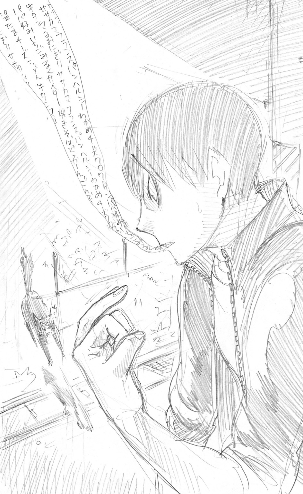

| ハイキュー!! ショーセツバン!! I 烏野強化合宿 | |
| 古舘春一 & 星希代子 | |
この本は縦書きでレイアウトされています。
また、ご覧になる機種により、表示の差が認められることがあります。
この作品はフィクションです。
実在の人物・団体・事件などにはいっさい関係ありません。
５月２日、０時。第二体育館――
宮城県立烏野高等学校の第二体育館は、暗く、冷たく、静まりかえっていた。
コート１面ぶんのこぢんまりとした第二体育館を使用しているのは、代々、男子バレー部のみ。そのため部活の後も、ゆるめたネットがそのまま立てられている。
閉めきられ、風も通らない体育館で、ネットは小さく揺れることもなく静かに立っている。
部員たちがやってくるのを、じっと待っているかのように。
毎朝、最初にやってくるのは、１年の日向か影山。
ふたりで競い合っているのだろう。息せききって駆けこんでくる新入部員の頰は、早朝の風に吹かれて赤い。
暗い体育館に、蛍光灯がつけられる。
７時が近づくと、部員たち、マネージャー、コーチ、監督が次々と集まってくる。全員が顔をそろえたころには、第二体育館の中はすっかり騒がしく、熱を帯びはじめている。
そして、音が満ちてくる。
ガラガラとかごを鳴らして、ボールが運ばれてくる。
ワックスの光る床に、シューズの底が擦れてキュッと鳴る。
ボールが床に叩きつけられ、ドッと体育館が揺れる。
かけ声、歓声。
手を叩きあう部員たち。
汗が飛び散り、たまには笑顔も見える。
ホイッスルが鳴り、部員たちがコーチのもとに駆け寄る。
怒鳴られ、さらに声を出す。
音と熱に満ちて、体育館が沸く。
しかし、今はまだ、第二体育館は夜に包まれて静かに眠っている。
そのとき部員たちもまた、第二体育館のことを考えていた。眠りにつく前のひととき、第二体育館のことを思う。
起きてもう一度カバンの中を見直す者、気合いを入れて筋トレに励む者、練習に備えてさっさと眠る者、そして期待と興奮でなかなか眠れず、何度もトイレに起きる者......。
そのうち、最後のひとりもようやく眠りにつく。夢の中でも、体育館のことを思うだろうか。もしかしたら、そうなのかもしれない。
夜が明けたら、待ちに待った合宿初日。
練習に明け、練習に暮れる、バレーボール三昧の日々がついに始まる......！
５月２日、６時。日向家――
日向翔陽は、薄明るい玄関にいた。
足を入れたスニーカーはひんやりと冷たい。背すじが伸びるような気持ちで靴ひもを結ぶ日向のかたわらには、パンパンにふくらんだショルダーバッグが転がっていた。
「よしッ」
気合いを入れて立ち上がった背中に、とぼけた声が飛んできた。
「兄ちゃん......そのカバン、えんそく？」
「だから、合宿だって何度も言ってんじゃん！」
寝起きの目をこすりながら階段をおりてくる妹・夏に言いかえすと、日向は「よいしょっ」とショルダーバッグを肩にかけた。
今日はゴールデンウィーク前日、待ちに待った合宿初日だ。
決して遠足気分というわけではないけれど、バッグの中は洗面道具や着替えに加えて、お菓子、マンガ、お菓子、お菓子、トランプ、お菓子がつまってはちきれんばかりになっていた。
ふたりのやりとりを聞いてか、母親がのれんからヒョイっと顔を出す。
「今日の夜から、連休中ずっとお泊まりなんだって」
その言葉に、半分眠っていた夏の目がパチッと覚めた。
「えーっ、アタシもいく！」
「ていうか、翔陽。今日、普通に授業もあるんでしょ？ 勉強道具とかちゃんと入ってるの、それ？」
日向の背中にギュウッとしがみついた娘を引きはがして、母がきく。たしかに、ふくらんだバッグの様子はどことなくやわらかくて、１日ぶんの教科書やノートが入っているようには見えない。
「ん、ぜんぶ学校に置いてるから大丈夫！」
元気に答えた日向は「んぬ!?」と、つり上がった母の目にもかまわず、勢いよく玄関を開けた。
「んじゃ、いってきまーす！」
「こらっ、翔陽!!」
母親の声を背中にききながら自転車にカギを挿し、スタンドを蹴る。
朝練は７時ちょうどから。もちろん遅刻は厳禁だ。
ここ雪ヶ丘町から烏野高校まで、気合いを入れれば30分。まだまだ時間に余裕はあったが、合宿に向けてはやる気持ちをどうにも抑えられなかった。
「よーしッ！」
期待に弾む心臓がくすぐったい。顔が勝手にニヤけてくる。
日向は自転車に乗ると、まっすぐ前を見てペダルを踏んだ。
出発だ。
「いってらっしゃーい！」
玄関から手を振る夏の声が、早朝の澄んだ空にピンッと響く。砂利を蹴散らして勢いよく飛び出した自転車はどんどん小さくなり、田畑の広がるのどかな風景にとけこんでいった。
「まったくもう、あの子は......」
息子が帰ってくるのは４日後の夕方。それまで会えないと思うとやはりさみしかったが、母親は気をとりなおすように娘の肩を叩いた。
「さ、ごはんにしましょ」
「うん」
名残惜しそうにもう一度振りかえり、兄の姿を捜した妹がキョトンと目を丸くした。
「あれぇ？」
「どうしたの？」
娘が指差した先を見て、猛スピードでＵターンしてきた自転車に気づく。一瞬心配そうな顔をした母だったが、必死の形相をした息子の叫び声が耳に入ると、ピクリとこめかみを引きつらせた。
「昨日洗ったシューズ忘れたーっ!!」
「もう、ちゃんと準備しなさいって何度も言ったでしょッ！」
母親が怒鳴ると同時に、日向のビーチサンダルをつっかけて庭へまわった夏が、物干し台に干してあったシューズを投げた。
「はい、兄ちゃんッ！」
「サンキュ！」
パパンと小気味よくキャッチしたシューズを無理やりカバンに突っこみ、日向が再び学校へ向かう。
「いってきます！」
「気をつけてね」
「いってらっしゃーい！」
手を振って見送った母娘の顔が、しかし、すぐにくもった。
「あ、兄ちゃんまたくる」
「今度はなんなのよ......」
立ち尽くすふたりの目の前で、急ブレーキのかかったタイヤがザザザザザーッと砂利を跳ね飛ばした。
「弁当！ 弁当!! 弁当 」
」
自転車を飛びおりて玄関へ飛びこんだかと思うと、すぐに大きな弁当袋をガチャガチャ鳴らして飛び出してくる。玄関に立ったままの夏が、目の前をいったりきたりする日向を見てしみじみとつぶやいた。
「よく飛ぶ兄ちゃんだねぇ」
その兄が、ゴツゴツとふくらんだショルダーバッグを背中でバウンドさせて、自転車に飛び乗った。
「じゃ、今度こそいってきます！」
もうもうと土煙を上げて飛び出すと、自転車はあっという間に道の先を曲がって見えなくなった。
母娘がやっとひと息つく。
「......もう大丈夫でしょ。ほら、早く着替えてごはん食べよ」
「うん」
パタパタと娘のほこりを払って家に入り、朝食の用意に戻る。
「もう、あの子ったら本当にオッチョコチョイっていうかなんていうか、いったい誰に似たのかしら......」
ひとりため息をついて味噌汁を温めなおしていると、ガラリと玄関の開く音がした。
母親がおたまをとり落とす。
「兄ちゃん!?」
妹がランドセルを片手に２階から驚きの声を上げる。
そして、青白い顔をした日向が、ギュッとお腹をかかえて家に駆けこんできた。
「トトトト、トイレ！ トイレ！ トイレッ!!」
「よしっ、もう大丈夫だ。まかせとけ！」
母親ににらまれながらもう一度カバンの中身を確認し終えると、日向はスッキリした顔でテレビ画面に映る時刻を見た。
６時20分。
「わっ、もうこんな時間!? いつもより遅いじゃん!!」
開けっ放しの玄関を転がるように飛び出すと、倒れた自転車を起こして跨がる。誰よりも早く体育館にいって練習しようと思ってたのに、これじゃあ影山に先を越されるかも......。
「くっそー」
日向はくやしそうに、くちびるをグッと突き出した。
どんな小さなことでも、それが体育館に入る順番であっても、同じ１年の影山飛雄には負けたくない。あの、１８０センチの高みから見下ろす「フン」と勝ち誇った顔ときたら......。
「......影山め、えっらそーに」
そんな日向の心を読んだように、妹の声が飛んでくる。
「とびおに負けんなよーっ！」
縁側から身を乗り出してブンブン手を振る妹にビシッと敬礼して応えると「......っしゃ!!」と体重をかけてペダルを踏みこんだ。
今度こそ、本当に出発だ。

心地よい冷気をはらんだ五月の風を全身に受けて、入学から１か月近く通ってきた通学路を普段よりもさらに速いペースで進む。この先の商店街を抜ければ県道に出る。そうしたら山までの直線をグングン進んで、山をひとつ越えたら学校に到着！
「なんか、今日、記録更新できるかも！」
その距離と坂の多さに、入学してすぐはヘトヘトになっていた自転車通学。しかし体力がついたのか今はもうすっかり余裕で、ひそかに30分をきる記録更新まで狙っていた。
澄みきった早朝の空気が気持ちよくて、気分がどんどん上がる。
それに、なんといっても今日から合宿なのだ！
中学時代、部員が足りずにツギハギのような練習を重ねていた日向にとって、この朝から夜まで１日中バレー三昧の合宿は、本当に、本当に、本ッ当～に心待ちにしていた一大イベントなのだった。
キュッとタイヤを鳴らしてカーブを曲がり、商店街に入る。まだほとんどの店が閉まっている早朝の商店街を猛スピードで走り抜ける日向の視界に、１軒の店が飛びこんできた。
「......あ！」
まだシャッターのおりている店先で、思わずブレーキを握る。ガクンと前のめりに停まると舗道に片足をつき、くすんだ看板を見上げた。
「この電器屋さん......」
なんの変哲もない、昔ながらの町の電器店。そこは、まだ幼い日向が〈小さな巨人〉と出会った場所だった――。
『まさに〈小さな巨人〉！』
アナウンサーの興奮した声に、思わず振りかえったあの日。
店先に据えられたテレビには、誰よりも速く高く飛ぶ、小さな選手が映し出されていた。
長身の選手がひしめくなか、頭ひとつ小さな選手が次々と得点を決めていく。そして、彼をたたえるように、その小さな背中や肩を叩くチームメイトたち......。
彼らの黒いユニフォームには「烏野」の白い文字。隣町の「烏野高校」だ。
「う、わ......」
小学生の日向は、自分と同じ小柄な選手の活躍から目が離せなかった。
バレーボールのルールなんか、知らない。
それでも、思った。
あんなふうになりたい！
――そして、ついにこの春、日向はあこがれの宮城県立烏野高校排球部に入部した。
「ここから、はじまったんだ......！」
ギュッとくちびるを結んだまま、閉まったシャッターを見つめた。そして、ペダルにかけた足に視線を落とす。
そのとき、どこからか歓声がきこえた気がした。
耳を刺すホイッスルの音、轟く太鼓。床とシューズが擦れて鳴り、高い天井にボールの跳ねる音と選手たちのかけ声が響く。そして熱気に満ちた会場にはエアーサロンパスの匂い......。
烏野高校排球部の黒いジャージの下、全身にブワッと鳥肌が立つのがわかった。
心臓が熱く打って、ハンドルを握った手が汗ばむ。
この脚で......。
跳んで、跳んで、跳んで、誰よりも高く跳んで......。
あのコートに、全国のコートに立つ！
力んだ日向のかたわらで、バサッと大きな音がした。
「な、なんだ!?」
大きな黒い影。電器店の隣に置かれたポリバケツから、１羽のハシブトガラスが飛び立ったのだ。
「びっくりした......」
思わず目で追ったカラスが、商店街の時計台にとまった。
６時30分。
「遅刻......は大丈夫だけど、急ぐか！」
ハンドルを握り、電器店を後にする。ペダルをこぐ日向は、すっかり奮い立っていた。
早く、早く、練習したい！ もっと上手になりたい！
顔を上気させて商店街を急いでいると「翔ちゃん！」と声がかかった。
「ん？」
「翔ちゃん、朝練かい？」
開店準備をしていた青果店のおかみさんだ。日向はブレーキを握り、ちょっと胸を張って答える。
「今日から合宿なんだ！」
「あら、じゃあ、これ、みんなで食べな！ またママさんバレーにも顔出してよ！」
おかみさんは運んでいた段ボール箱を置くとちょっと腰を叩き、レモンを何個か紙袋に入れて渡してくれる。
「わっ、いいの!? ありがと！」
紙袋を自転車のカゴに入れて礼を言うと、日向はブンブンと手を振って自転車をこぎだした。
「やったァ」
開店前の商店街は、舞台の裏側をのぞくようで楽しい。
すぐ先のコインパーキングでは、理髪店のおばあちゃんが柴犬ラッキーの落とし物を片づけているところだった。いつもならラッキーと遊んでいくんだけど......。
「ウオンッ！」
ハフハフハフッとこっちを見ている、うるんだ黒目のかわいさよ......。でも、ゴメン！ やっぱ遅刻するわけにはいかないんだ！
いっしょに遊びたい気持ちをグッと抑えてブレーキをかけると、自転車の上から柴犬の頭をなでた。
「おはよ、ラッキー」
「あらぁ、翔陽くん、おっきい荷物だこと。今日はラッキーと遊んでかないの」
「朝練、遅れそうなんだ」
肩をすくめて舌を出した日向に、隣の精肉店のおじさんが「帰りにコロッケ買ってきな、翔ちゃんには揚げたて用意するからな」と笑う。日向の口いっぱいに、ジュワッとコロッケの味がよみがえった......。
「じゃあ帰りに１個......って、ゴメン、今日から合宿なんだ！」
「そうかそうか！ また全国大会いってくれよ！」
「......オス!!」
日向は満面の笑みでその言葉に応えると、再びペダルを踏んで出発した。
「頑張れよーっ」
大きな声援にちょっと顔を赤らめて片手を上げ、自転車を飛ばす。クリーニング店のノボリが通りすがりにバタバタッと揺れて、耳元にシャアッと風の音がした。
店も少なくなってきた商店街のＹ字路を左に進み、自転車は広い県道に出た。
街路樹が朝の光を受けて青々と照る。ここから山までは、平地で一直線。ついつい商店街で寄り道したぶんの時間を、ここの直線でとり戻すつもりだった。
みずみずしいケヤキ並木の木漏れ日のなか、日向は風をきって最後の平地をグングン進んだ。実を言うと、信号の少ない山までの県道は、スピードを楽しめる唯一の場所でもあった。
「フフーン♪」
気分よく自転車をこいでいた日向の数メートル先、車道に出てきた作業服の男性がホイッスルを鳴らした。
「ん？」
バス会社の車庫から出てきた整備士だ。日向はキッとブレーキを鳴らして自転車を停める。整備士はこちらにちょっと頭を下げると、ピピッピピッとリズミカルに笛を吹いて、道路にバスを誘導しはじめた。
「えっ」
軽く足をついて停まった日向の目の前を、空っぽのバスが列になってゆっくりと横ぎる。
１台、２台、３台、４台、５台......。
ジリジリして待っているせいか、バスの行列は普段よりものんびり動いて見える。
「うう」
ようやくすべてのバスが車道へ出て走り去ると、整備士がまた頭を下げた。
「お急ぎのところスミマセン。連休で貸しきりが増えてて......」
「い、いえいえ」
日向もあわててペコリと頭を下げると、先を急いだ。
「今日に限って、思わぬところで足止めが......」
少し焦って、スピードを上げる。もうすぐこのまっすぐな道も終わりだった。
先にカーブが見えてきた。道の両脇から、高い建物や店が少しずつ減っていく。小さな川にかかる橋を越えてゆるやかな坂道に入ると、景色は町から山に変わった。
「おしッ」
気合いを入れ直すと、日向は変速ギアもついていないただのママチャリとは思えないスピードで、坂道をぐんぐん登りだした。緑に茂った５月の山が後ろに流れ、道路脇の雑草に隠れていたスズメが自転車に驚いていっせいに飛び立つ。
その草むらの中を、なにか黒いものがサッと素早く動くのが見えた。
「え、なに？」
あわててもう一度確認する。その黒い影は、背の高い雑草をかきわけて走る黒猫だった。
「え!? おーい、ネコー、あぶないぞー」
しかし黒猫は、声をかけた日向を黄色いビー玉のような目でギロリとにらんだ。
「う、目つき悪いな......っていうか、速いな、お前！」
黒猫はプイッと顔をそらし、草むらから車道に飛び出てきた。そして日向のすぐ脇を競うように並走しはじめたのだった。
「......ん、なんだ、勝負か？ よーしッ、ネコなんかに負けないぞ！」
ニッと笑ってペダルを踏みこんだ日向の頭で、しかし何かが引っかかった。
「ん、ネコなんかに......負け、ない？ なんかそういうの前に......」
首をひねった日向の顔がパッと輝いた。
「そうだ、音駒！」
４日後に戦う、音駒高校。
因縁のライバル！
名勝負、ネコ対カラス『ゴミ捨て場の決戦！』
日向はハンドルをギュッと握りなおした。
この合宿で、もっともっと強くならなきゃ......。
「ネコなんかに、負けてられないッ！」
そうだ、朝も昼も夜もいっぱいいっぱいいっぱい練習するんだ。ゲロ吐いたって血ィ吐いたっていい、とにかく練習して、サーブだって二度と......もう二度と、絶対に、失敗しないようにして......。そうだ、影山のギュンッていう速攻だけじゃなくて、菅原さんのトスだってバンバン打てるようになる！ それで、それで......。
暴走しはじめた日向の頭で、弾けるように飛ぶ〈小さな巨人〉のシルエットがフラッシュバックした。
「おれも！ あんなふうに、飛んでみせるッ！」
思わず叫び、力んで勢いよくこいだ自転車の前を、今度は白猫が横ぎろうとしていた。
「え!? わ、あぶな......い!!」
あわててブレーキをかけた自転車の後輪が、ふわっと浮いた。
「え」
日向の尻が、サドルから離れる。
「うわ。あ、レモン！」
グッと手を伸ばし、カゴから飛んだ紙袋をつかんだ。
「え？」
気づくと、日向は完全に宙に浮いていた。
「と、と......飛んだああああああああああっ！！！！！」
雲ひとつない青空、萌えたつ青葉に光る朝露。
ピーヒョロロロロロと、トンビの澄んだ声が響く。
美しい、五月の山景色。
放り出されて逆さまになった視界のなか、舗道にコロンと片方だけ転がるスニーカーと２匹の猫を見ながら、日向はゆっくりと落ちていった。
チュンチュンとスズメのさえずりがきこえる。日向はぶつけた脛をさすりながら、道路脇にしゃがんで外れたチェーンをなおしていた。
「イテテ......」
ショルダーバッグがクッションになったせいか、派手に吹っ飛んだにもかかわらず自転車も身体も傷ひとつない。打ちつけた身体よりもペダルの当たった脛のほうが痛いくらいだ。
しかし、楽しみにしていたお菓子は、カバンの中で全部くだけていた......。
「ううう、おれのえびせん......」
くだけたスナック菓子の袋を見てシュンと落ちこむ。しかも、その袋を持つ手はチェーンのオイルで真っ黒。ベタベタして、鉄くさい。
うなだれる日向の膝に、さっきの白猫がすり寄ってきた。
「あ、お前、無事だったか」
「ニャー」
「よかった......。あ、お前ら、兄弟？」
少し離れた木の陰から、勝負を挑んできた黒猫がこちらをジッとにらんでいるのに気づいた。
「なにそんなに怒ってんだよ。ほら、これ、くだけちゃったけど食う？ しょっぱいかな？」
袋を開けると、日向はくだけたスナック菓子をパラパラと手のひらに出した。黒猫もピンとシッポを伸ばして近寄ってくると、白黒２匹並んでクンクン鼻をひくつかせる。
「お前ら、顔似てないな。シロのほうはアイキョーがあるもんな。兄弟じゃなくて友だちか？ いいなあ」
そう言って笑った日向の手に、空から何かひらりと小さなものが落ちた。
「ん、なんだ？」
汚れた指先でつまんだそれは、桜の花びら。
見上げると、日向は満開の桜の下に立っているのだった。
「うっわあ～!!」
思わずぐうっと頭を反らせる。四方に伸びる枝からもくもくと沸き上がるように咲く桜の花、そして青い空で視界がいっぱいになる。
「すっげえ......っととと」
身体を反らしすぎて、ストンと尻もちをつく。春の若い草がつぶれて、青くさいような匂いがした。やわらかい地面に手をついた日向の上に、猫が乗り、桜が降る。
「山だから、町より遅く咲くんだ......」
猫を膝に乗せたまま、チラチラと光を受けて散る花びらにしばらく見とれていた。そして、ふと、バレー部のみんなとここで花見でもしたら楽しいかな、と思いつく。学校の桜はもう散っているし、昼休みにここにきたらみんなびっくりするんじゃ......。
しかし日向は、すぐに小首をかしげた。
「うーん、いや、それは、どうかな......？」
眉間にぐぐっとシワを寄せると、日向は座りなおしてあぐらをかいた。膝から落ちまいとジャージに爪を立てた猫たちが、しかしコロンと落ちる。猫たちの不満そうな鳴き声のなか、日向は考えた。
誰とは言わないけど、言わないけども、イヤなヤツだって......、どうにも友だちになれなさそうなヤツだっている。そんなふうに遊んだりするのは、どうもちょっと違うような気がする。
だって、ブルーシートに影山とふたり並んでニコニコとおむすびを食べるなんて、弁当のおかずを交換しあって食べるなんて、「食え」とか言われてタコさんウインナをもらうなんて......。
「......うッ！」
桜の散るなか、日向は悪寒をおぼえて立ち上がった。
「......うん、そういうんじゃないや。違う違う」
たぶん、おれたちは仲のいい友だちなんかには絶対になれない。なる必要もない。
ただ、みんなといっしょにバレーボールがしたい！ いっしょに強くなりたい！ 試合に出たい！ 勝ちたい！
ただ、それだけだった。
「よしッ」
荷物を詰めなおしたカバンから、携帯をとり出して時間を見る。
６時45分。
「う、これは遅刻......。いや、急げばまだ間にあう！ 間にあわせる!!」
真っ黒になった手でハンドルを握る。日向は陽だまりに並んで毛繕いをはじめた猫たちに「車に気をつけろよ！」と手を振り、スタンドを蹴った。髪についた花びらが飛ぶ。
まっすぐ前を向いたその顔は、ただ次の勝利だけを見つめていた。
音駒に、勝つ！
荒い息を吐いて自転車をこぐ日向の頰が赤い。それはきっと、冷たい風のせいだけではなかった。
「......よしっ、近道だ！」
日向は、いつもより１本手前の道を曲がった。
その道を使えば時間はかなり短縮される。が、普段通らないのには理由があった。途中に急坂があるのだ。そびえ立つ、と表してもおかしくないその坂は、誰が呼んだか通称『心臓破りの坂』......。
先を急ぐ日向の背中が緊張に少しこわばった。
異名を持つ坂までたどりつくと、日向は思わず自転車を停めて頂上を見上げ、ゴクリと生唾を飲みこむ。壁のような急勾配は７度近くと公道ギリギリ。自転車通学を選んだ体力自慢の生徒も、この道は選ばない。さすがの日向ですら、いつもは敬遠する坂なのだ。
しかし、遅刻するわけにはいかない。今日はこの道を選ぶしかなかった。
「よしッ......」
日向は覚悟を決めると、ペダルを踏みつけた。ぎしっ、ぎしっ、と、ふらつきながら坂を登りはじめる。
「う......ぐっ、荷物、重い......」
額には、すでに汗がにじんでいた。
つうか、おれ、マンガとかトランプとか、なんで持ってきたんだ......。影山に見られたら、絶対「お前は遊びにきたのか」とか言ってギロッとにらむよな......。ポッキー食べながら大富豪する影山とか、ないよな......。
「ハッ、ハッ、ハアッ、うッ、ハアッ......」
額から、ポタリと汗が落ちる。
歯を食いしばって急坂を登る日向の耳にブロロロロロと低いエンジンの音が響き、バスが近づいてくるのがわかった。
「ぐっ、こ、この......」
大勢の乗客を乗せた路線バスが、小さな自転車をこともなく追い抜いていく。
「くっそ......！」
巻きこむような風と排気ガスに顔を上げた日向は、学生服とジャージがひしめくバスの中に懐かしい友人の横顔を見た気がした。
「え？」
もう一度、窓ガラス越しの顔を見る。苦痛が見せた幻覚だろうか。
いや、間違いない。そこにいたのは、中学時代、最初で最後の公式戦――１回戦、たったの31分で惨敗したあの試合に助っ人で出てくれたふたりだった。
高校が別々になって１か月しか経っていないのに、フツフツとものすごい懐かしさがこみ上げてくる......。
「イズミン......、コージーッ!!」
日向はとっさに前傾姿勢をとって腰を上げると、必死の立ちこぎでバスを追いはじめた。
「待てええええええェェッ！」
左右に身体を振りながら、鬼の形相でガシャコガシャコガシャコと追い上げていく。
「うおおおおおおおッ！」
いつもより重いバッグが邪魔くさい。太ももが、さっきぶつけた脛が、熱い。もう、まわりの景色なんて目に入らなかった。ただ、緑色のナンバープレートだけをにらんで自転車をこぎ続ける。しかし、日向の運動能力がどんなに人並みはずれているとはいえ、急勾配の自転車はなかなか前に進まず、そう簡単には追いつけない。
「ぐっ......はッ、クッソ――ッ」
鼻息も荒く猛然とペダルを踏み、じりじりとバスに近づいていく。バスだってこの坂はきついのだ。ブロロロロロッとさらにエンジンを吹かす音が響いて、日向の顔まで熱が伝わってくる。熱い。全開になった額から落ちた汗が、一瞬で風に散って消えた。
「......あと、すこ、しッ！」
じわじわと少しずつ距離をつめてくる自転車に気づいて驚いたのは、もちろんバスの乗客たちだ。
「おい、アイツなんだ!?」
「この坂だぞ!? すげえな、あのママチャリ！」
「おーい、頑張れー！」
退屈な通学時間のちょっとした暇つぶしとばかりに、学生たちが窓を開け、指を差して声援を飛ばす。最後尾の席にいたふたりも騒ぎに気づき、ガラス窓から外をのぞいた。
「......おい、あれ、翔陽じゃねーの!?」
「え!?」
古い路線バスのきしむ横窓を押し上げると、冷たい風が吹きこんでくる。サッカー部だった関向幸治、通称コージーがしかめた顔を突き出した。
「翔陽！ おまえ、なにやってんだよ!?」
あがくようにバスを追いかけていた日向が、やっと気づいたふたりを見上げてニッと笑った。......つもりだったが、その歪んだ顔が笑顔に見えたかどうか。
「ハッ、ハアッ、おっ、おれ......おれさ！ う、うぇ......、いッ、今、すっごい楽しいんだ！ おぐッ......」
荒い息できれぎれに叫ぶ日向を見て、コージーが啞然とした。
「え。いや、吐きそうに見えるけど？」
「ちッ、違うって！ 今じゃなくて、部活の話！ おッ、おれ、今日から合宿なの！ 合宿ッ！」
「へえ、すごいじゃん！ 部活どう？ 先輩、やっぱ怖い？」
バスケ部だったイズミンこと泉行高も、懐かしいソバカスの顔を出す。
「いや、先輩たちはやさしいんだけど......」
思わず口ごもると同時に、日向の自転車がよろけた。
「う、わ！」
速度が落ちて、バスとの距離が一気にひらく。窓から身を乗り出してイズミンが叫んだ。
「だいじょぶ!?」
日向は歯を食いしばって追い上げながら、言った。
「......先輩より、正直、１年のほうが、コワイ!!」
「えー!?」
「ホントだって！ ほら、中学の試合でデカいヤツいたじゃん。アイツ、スッゲー怖いの！」
「アイツか！」
「あー、おぼえてるおぼえてる！」
ちょっとうれしそうに顔を見あわせるふたりに向かって、日向が続けた。
「でも、くやしいけど、やっぱスッゲー上手いの！ おれ、アイツのトスなら速攻だって決められんの！」
そう言って、ハッとする。
そうだ。
アイツのトスじゃないと。影山がいないと、おれはまだ戦力にならない。
でも影山は、中学のときよりさらにデカくなって上手になってるし、ジャンプサーブなんかおぼえてるし......。
急に真剣な顔をした日向を見て、イズミンとコージーがまた顔を見あわせた。
「......あ、おれ、なんかゴメン!!」
あわててあやまる日向に向かって、イズミンが笑った。
「ううん、翔ちゃん、よかったなって思ってさ！」
「え？」
日向のぽかんとした顔を見て、コージーも笑う。
「バレー部あって、よかったな!!」
「あ......」
その一言に、日向はかえす言葉を失った。
あの、中学時代......。
体育館やグラウンドの隅っこで、ほかの部活の邪魔にならないようにひっそりと練習した日々、女子バレー部に頼みこんでいっしょに練習した放課後、ママさんバレーの練習時間を調べて市民体育館へ出かけていった休日、そして、友だちが自分の部活の合間をみて上げてくれた貴重なトス......。
つらかったし、くやしかったけど......。でもあの３年間があったから、今があるんだ！
日向はグッと顔を上げた。
窓から顔を出して髪をなびかせるふたりを見上げて、満面の笑みで叫ぶ。
「うん、おれ、烏野いってよかった!! それもこれも、ぜんぶ、みんな、ふたりのおかげだから!!」
「ほら、また！ そういうこと言うなって！」
「照れるし！」
そのとき、ブオンとアクセルを吹かす音がした。山を登りきったのだ。カーブを曲がるとすぐに下り坂になり、バスのスピードが上がる。
「あ、待っ......」
さらに追いかけようとする日向に、ふたりが手を振りながら叫んだ。
「合宿前からヘタっちゃだめだって！」
「待ってんだろ！ チームメイト！」
「............！」
日向は自転車をこぐ足を止めた。バスとの距離がどんどんひらいていく。日向は片手を離すと、大きく手を振った。
「うん、じゃーな！ またメールする！」
窓から顔を出して手を振るふたりが見える。日向は照れくさそうにちょっと笑って、大きく両手を振りかえした。
「またな！」
バスはさらにカーブを曲がり、山肌の向こうへ消えて見えなくなった。
坂をおりる自転車に身をまかせながら、日向はハンドルを握る手にチラリと視線を落とした。
あの日、イズミンとコージーが助っ人にきてくれなかったら、試合には出られなかったんだ。そしたら、影山の中学と戦うこともなかったし、体育館でもっかい会ってすぐにケンカすることだってなかったかもしれない。そしたら、あの秘密の朝練だって、３対３だってなくって......。
ハンドルごと、ギュッと拳を握った。
ふたりが上げてくれたボールが、まだ繫がっている気がした。
強く、なりたい。
あのときなかったものすべてが、烏野にはある。練習、経験、指導者、練習相手、それと、合宿も！
「チームメイトが待ってる......か」
少し勢いをつけてカーブを曲がると、冷たい風の中、眼下に隣町が開けた。もうすぐ学校だ。
チームメイトが、いつもの体育館で待ってる！
「......待って......る？ って、待たせちゃダメじゃん!!」
あわててショルダーバッグのポケットから携帯をとり出した。
６時50分から、51分へ変わったところだった。
「うわ！ あと10分ないじゃん!!」
日向は、全速力で坂を駆けおりていった。
まだほとんど空いている駐輪場にあわてて自転車を停める。適当にだけど、今はかまっていられない。日向は急いで校舎の裏に建つ第二体育館へ走った。
重い鉄の扉を開けて、右手の壁にかかる時計を見上げる。
６時58分。
「間にあった......」
ホッと息をついた日向の目の前に、影山の仏頂面が現れた。
「おせーよ」
「うっ......、ちょっと、あの、いろいろあって......」
「なにがいろいろだ」
ゴゴゴゴゴゴゴと威圧的な目で詰め寄ってくる影山に気圧されて「あ、いや......」と小さくなった日向の後ろから、主将の澤村がヒョコっと顔を出してため息をついた。
「お前ら、また揉めてんのか、懲りないな......」
「バカなんでしょ」
いつからいたのか、表情も変えずに吐き捨てた月島が、隣で「ツッキーは......」と言いかけた山口をにらんで黙らせる。
「朝から元気でいいじゃねーか！」
「田中も十分、元気だけどね」
ニット帽をかぶった田中に、コンビニの袋を持った菅原も続いてやってくる。西谷はドタドタと走って体育館に現れるなり、仁王立ちであたりをキョロキョロ見まわして怒鳴った。
「アサヒさん、またギリギリかよ!!」
「......ご、ごめん」
少しおくれて、エースの東峰がオドオドと顔をのぞかせる。
まだひんやりと冷たい体育館の中、日向は次々と集まってきたチームメイトの顔をジーッと見まわした。そして、小さく笑みをもらす。
「......へへっ」
目の前に立ちはだかる、高い、高い壁。
その向こうはどんな眺めだろうか。
どんなふうに見えるのだろうか。
頂の景色――。
おれ独りでは、決して見ることのできない景色。
でも、独りではないのなら、見えるかもしれない景色――。
「......おい、なんだよ？」
眉間にみっちりとシワを寄せた影山がいぶかしげににらんできた。
ムカつく。ヤなヤツ。
でも、影山がいないと、おれはまだ戦力にならない。
でも、影山がいたら......、
おれは、飛べる!!
体育館の壁で、時計の針が７時を指した。
日向は晴れ晴れとした顔をしてビシッと背すじを伸ばす。
「おはよーございますっ！」
そしてニヤニヤ笑い出したかと思うと、我慢の限界とばかりに飛び跳ねた。
「......よーし、合宿だーッ!!」
「おい、今日はまだ授業があるんだぞ」
たしなめる澤村の声は耳に入っただろうか、日向はもう用具室へと駆け出していた。
５月３日、７時の少し前。合宿所――
スリッパのまま器用に階段を駆けおりた日向翔陽は、ちょうど外から戻ってきた影山飛雄と玄関ホールで鉢あわせた。
腰を屈めてランニングシューズの紐をほどく影山を見下ろして、日向がきく。
「......外、走ってきたのか？」
「それ以外、なにしてたように見えるんだ」
「いや、会わなかったなーと思って。おれも、さっきまでそのへん走ってたからさ」
その言葉に、影山が顔を上げた。日向が続ける。
「で、すっげー天気よかったから、戻ってみんなの布団干したとこ！」
「そんなことまでしてんのか......」
パタパタと食堂へ急ぐ日向の背中を見て、影山は呆れたような感心したような顔でつぶやいた。そして、どんなときでも決して楽な道を選ばない、楽な選択肢など考えつきもしない日向に、密かにライバル心を燃やした。
そんな影山の気持ちなどつゆ知らず、日向の頭は朝食のことでいっぱいだった。食堂の扉を開けて、思わず声を上げる。
「わ！ 朝から豪華！」
あらかた朝食の用意ができたテーブルからは、食欲を誘う匂いと湯気が立ちのぼっていた。駆けこんだ日向が、食事の支度を手伝っている先輩たちに気づく。
「あ、すいません！ おれやります！」
朝食の献立は、塩鮭の切り身に鶏肉の照り焼き、出汁巻き玉子、きんぴらごぼう、マカロニサラダに大根とわかめの和風サラダ、ほうれん草といんげんのゴマ和え。そして具だくさんの豚汁とほかほかの炊きたてごはん。
すべて、顧問兼監督の武田が栄養バランスを考えながら腕を振るったものだ。
「すごいよなー、武ちゃん。現国じゃなくて家庭科の先生でもいけるんじゃねーの？」
「最初の朝ごはんだからって、ちょっと頑張りすぎましたかね......」
田中にほめられた武田が、照れたように頭をかいた。
「それじゃあ......」
全員が席についたのを確認すると、澤村が手をあわせる。
「いただきます!!」
みんな競いあうように料理に箸をのばし、山盛りの料理がどんどんそれぞれの胃の中へ消えていく。食べ盛りの部員たちが集まると、食事の様子までスポーツのようだった。
口いっぱいにほおばった鶏肉の照り焼きをゴクリと飲みこんで、日向が先輩たちにきく。
「音駒って、いつこっちにくるんですか？」
「ウチの前にも練習試合があるみたいだから、今日か明日にもくるのかもね」
菅原の言葉に、ほかの部員たちも「へーえ」と反応した。
「いいな！ 練習試合ツアー!!」
日向が無邪気にそう言って豚汁をすすると、中学時代に遠征の経験があるのだろうか、影山がキッとにらむ。
「キツいぞ」
「キツいだろうけど！」
日向が言いかえすと、田中が箸の先でふたりをビシッと指して口を挟んだ。
「ウチの合宿だって......十分キツいからな？」
息をのむふたりを見てニヤリと笑いながら、指折り数える。
「朝一のロードワークからはじまり、スリーメンにシートレシーブ、それに強打レシーブやって、サーブ＆サーブカットで午前練は終わり。ここまででも通常の３倍のセット数はやるからな。で、昼休みの後は、フリースパイク、コンビ合わせ、二段トスとスパイク練が中心。そんで日替わりの合宿特別メニューとＡＢ戦を練習終了時間ギリギリまでやってから、シメに反省会って感じかな」
「本当に、１日中バレーなんだ......！」
ぷるぷると絶妙な焼き加減の出汁巻き玉子を箸でつまんだまま、日向が目をキラキラ輝かせた。あれもやりたいこれもやりたいと妄想をたくましくしているのが傍目にも丸わかりだ。
「そんな力んでると、またゲロ吐くぞ？」
そう言った田中の坊主頭を、澤村が軽く叩く。
「飯の時間だぞ！」
「あ、サーセン！」
先輩たちのやりとりを見て、日向がたまらず言った。
「うわー、なんか今、合宿！ って感じしました！」
遠足前のこどものような顔をする日向を見て、影山が「遊びじゃないぞ」とひと言たしなめた。日向がムッとふくれる。
「わかってるし！ つうか、お前には絶対負けないからな！」
「なにがだよ！」
「全部だよ!!」
日向はプイッと顔を背けてガツガツとごはんをかきこみ、空になった茶碗を持ったまま勢いよく立ち上がった。
「おかわりッ！」
台所からシュンシュンと湯の沸く音がする。武田が手際よく、食後のお茶まで用意しはじめたのだった。
８時。Ｔシャツと短パンに着替えた部員たちが、体育館脇の木陰に円く固まって準備運動をはじめた。よく晴れた５月の空に、部員たちの威勢のいいかけ声が吸いこまれていく。
「イーチニッサンシ」
「ゴーロックシチハチ！」
澤村の号令にあわせて手首足首をまわしながら、日向は隣の影山をにらみつけた。
「絶対、おれが勝つからな......！」
「バカ言え！」
殺気だつふたりを見下ろして笑うのは、頭の上で肘をつかみ上腕三頭筋をのばす月島だ。
「バカじゃないの、ロードワークに勝ち負けとかないし」
「うるさーい！ お前にも勝つ!!」
月島を指差して言いはなった日向に、山口が肩甲骨をまわしながら食ってかかった。
「ツッキーが負けるはずないじゃん。だって昔...」
「うるさい！」
月島が山口をにらむ。それを横目で見ていた東峰が、月島に声をかけた。
「...走るの得意なのか？」
「......放っといてください」
アキレス腱、太もも、腰、腕、肩のストレッチがひととおり終わると、澤村が片手を上げた。
「よし、準備いいか。ロードワークいくぞ！」
「オース！」
部員たちが走り出そうとした瞬間、日向がいきなり大声で叫んだ。
「よォーい......ドンッ！」
勝手に号令をかけたかと思うと、ひとりで道へ飛び出していく。
なにが起きたのかわからずに固まった部員たちが、どんどん小さくなっていく日向の背中をポカンと眺めていた。
最初に我にかえったのは影山だ。
「......あの、ボゲ!!」
あわてて日向を追いかける影山を見て、澤村が頭を抱える。
「あいつら、また勝手なことを......！ お前ら、いくぞ！」
「オ、オス！」
連休初日の５月３日。合宿最初のロードワークがパラパラと五月雨式にスタートした。
ロードワークは住宅地や烏野商店街へ続く道を抜け、烏野総合運動公園のジョギングコースををぐるりと１周して学校へ戻る１時間程度の道のりだった。
アップダウンの多い烏野の町では、どの道を選んでも坂か階段を避けられない。
「うおおおおお」
雄叫びを上げながら必死に走る日向に、無駄のないフォームの影山が追いついた。そして、そのまま半歩ほど前に出る。
「......んぬ、くそっ！」
立ち並ぶ住宅の庭木が道に落とした影の中を、バレー部員たちが走る。しのぎを削りあうふたりから少し離れて西谷と田中が、そしてその後ろにほかの部員たちが続いている。
舗道を踏むシューズの音と、荒い息。バレー部員たちは、いつまでもダラダラと続く長い坂道をただひたすらに走っていた。
少しでも前に出ようとがむしゃらに走る日向だが、影山との差は縮まらない。絶対負けられない！ なんとか１歩リードしたい......！ 汗を散らして競りあうふたりが、互いに歯を食いしばってにらみあう。
「そあっ!!」
勝利をあせる日向が、短く叫んで勢いをつけた。無駄だらけの動きながら、意地で１歩抜きかえす。
「ぐッ......」
影山がうめく。日向が大きく息を吸い、叫んだ。
「......ヤア――――――ッ」
後先をまったく考えずに気合いだけで影山を抜き去ると、真っ赤な顔をした日向はそのまま脇目も振らずに登り坂を駆け抜けていった。
「クソッ......」
くやしそうに顔をしかめた影山が、日向の背中をにらみながら追いかける。そして、日向から遅れることほんの10数秒、坂を登りきった影山の足が止まった。
「むッ？」
前を走っているはずの日向がいなかった。
どんなに速く走ろうとも、このわずかな時間で目の届かないところまで走っていけるはずもない。
「あのボゲ、どこいった......？」
立ち止まってキョロキョロと辺りを見まわす影山に気づき、息をきらして追いついた部員たちがきく。
「......ハアッ、ハアッ、おい、なにやってんだよ。ハアッ......、日向は、どうしたんだ？」
「たぶん、道を外れたんじゃないかと」
「はァッ!?」
日向の失踪により、ロードワークは開始からわずか20分で一時中断することとなった。
「迷子になったのが日向だからな......。帰り道がわからない可能性も否定できないぞ」
澤村が部員たちを道の脇に集めると、影山が苦々しげに吐き捨てた。
「アイツ、なにやってんだ......！」
「翔陽には、ヒモでもつけとくか？」
西谷が笑うと、月島がうんざりとした顔で言った。
「きっと誰かに拾われて幸せにやってるだろうし、放っときましょうよ......」
「まぁ大地さんが言うとおり日向だからな...。しかたない、捜しにいくか！」
田中の言葉に、部員たちが顔を見あわせた。たしかに大事な１年なのだが、勝手に飛び出し、勝手にいなくなったのは、自業自得という気がしないでもない。
口ごもる部員たちを見て、田中が言った。
「じゃあ、こういうのはどうだ？ ロードワークもかねて２チームにわかれて捜して、見つけたチームは食いたい物を武ちゃんに作ってもらえるご褒美つき！」
田中の提案に部員たちの耳がピクリと反応し、さっそくリクエストに悩みはじめる。
「いつものロードワークよりキツそうだけど、ご褒美は魅力的だな」
「......とんこつラーメンって、作れるのかな」
「ホヤ酢......？」
「３時に、ショートケーキ一択」
「豆板醬と花椒で辛さを調節できるようにして、俺だけ激辛にしてもらうとか......」
菅原までが真面目な顔で麻婆豆腐の辛さについて考えだし、澤村も折れた。
「......わかったわかった、じゃあ俺からも先生に頼んでおくよ。みんなで捜すぞ」
「オス!!」
部員たちが俄然やる気になり、気炎を吐く田中が手を上げた。
「じゃあ、１、２年合同チーム、とりあえず公園１周するぞー！」
「オス！」
１、２年チームが田中を先頭にガヤガヤと騒がしく走り出し、３年が彼らを見送る形となった。３年だけになると急に静かになり、ブロック塀の陰で雑草が風に揺れる音まできこえてくるようだった。
東峰が、ちょっとさみしげにつぶやく。
「３年って、俺たち３人だけか」
「田中のヤツ、先輩風を吹かせたかったんだろうな......」
気の置けない同い年の仲間だけになると、澤村は少しリラックスしたように苦笑する。菅原もちょっと笑ったが、すぐに気合いを入れるように言った。
「じゃあ、公園はあいつらにまかせて、俺らはとりあえず、ききこみでもしようか！」
澤村と東峰が、顔を見あわせる。
「......スガ、結構ノリノリだな」
一方そのころ。音駒高校バレー部でもひとりの部員が消えていた。
一行は仙台駅で新幹線をおり、烏野まで貸しきりバスで問題なくやってきた。しかし烏野総合運動公園の合宿所についたとたん、２年の孤爪研磨がフラリといなくなったのだった。
最後にバスからおりた主将の黒尾鉄朗が、合宿所の前に並ぶ部員と大量に積まれたスポーツバッグの山を見てきいた。
「......おい、研磨はどうした？」
「え、まだバスじゃないんスか？」
２年の山本が背伸びして車内をのぞきこんだが、黒尾は不機嫌そうに言った。
「俺が最後だったからきいてるんだよ」
「サーセン！ おい、お前、見かけたか？」
山本は荷物を合宿所へ運び入れようとしていた１年の芝山にきいたが「いえ、僕見てなくて、スミマセン！」と、頭を下げるだけだ。
「ったく......」
黒尾はジャージのポケットから携帯をとり出した。孤爪の番号にかけると、すぐに出たらしく喋り出す。
「研磨、今どこにいる？ ......はァ？ わかんないじゃないだろ。その辺に住所とか書いてないのか、ああ、ああ。あー、もういい、わかった。そこから動くなよ、ああ」
バレー部員たちが顔を見あわせた。疲れた黒尾の声から、ふだんと変わらない孤爪の顔と声が浮かぶようだった。
眉間にシワを寄せて電話を切った黒尾が、部員たちを集めて言った。
「研磨捜してくるから、みんな中入って休んでろ」
「俺らもいきますよ！ 手わけしたほうが早いだろうし」
手を挙げた１年の犬岡を見て、黒尾は首をふった。
「いいさ。土地勘のない人間がゾロゾロ出てったってしかたないだろ」
「......オス」
心配そうに見送る部員たちを残して、黒尾はひとり烏野の町に出た。
駅から離れた合宿所の周りには目印になるような物もなく、さっきの電話からはなんのヒントも得られなかった。地図もなく、見知らぬ町の迷子をどうやって捜したものか、なんとも心もとない。
しかし、バスからおりたほんの一瞬、目を離しただけのことなのだ。研磨だってそう遠くにいったわけでもないだろう。
黒尾は、まず目に入ったコンビニをのぞいてみた。しかし、早朝の店内に客の姿はない。
「ま、そう簡単には見つからないか......ん？」
コンビニの棚に並ぶ見慣れないローカル商品を見つけて、黒尾は東京から遠く離れた場所にいるのだと実感した。
「あいつ、よく、知らない町で勝手に歩けるな......」
コンビニを出ると、右に進むか左に進むか一瞬迷った。そのとき黒尾の目の前を、携帯ゲームをしながら男子小学生がひとり歩いていった。
「......類は友を呼ぶ、って言うしな」
そうつぶやくと、黒尾はゲーム少年の後ろをついていくように、コンビニを出て右へ歩き出した。まあ、大騒ぎすることでもないし、気楽にいこうじゃないか。
「じゃあ、こっちいって商店街見てみよっか。もしかして商店街チームの人とか、見かけてるかもしれないし」
菅原が烏野商店街への道を指差すと、東峰が苦笑した。
「また抜け駆けして、ＯＢに必殺技でも教わってるかもしれないしな」
「よーいドン！ とか言って」
さっきの日向を思い出してふたりが笑うと、澤村がぐうっと伸びをした。
「......まったく。あいつらときたら、いつもいつも勝手なことやらかして、手にあまるぞ......」
澤村の愚痴に、菅原が笑う。
「でもまあ、問題児ばっかりだけど、それだけやる気があるってことだからさ」
「それはわかるんだけどなぁ」
３人がそろって住宅街を歩き出すと、ブロック塀の陰で地面をつついていたスズメがチッと鳴いて飛んでいった。
信号を渡り商店街のアーケードに入ると、３人のすぐそばに１台の車が停まった。最初に気づいたのは菅原だった。
「あ、うちざわクリーニングさん！」
クリーニング店の前に停まったライトバンから、烏野ＯＢにして商店街チームのウイングスパイカー内沢が、ビニールに包まれた大量の洋服を持っておりてくる。
「ん？」
バレー部員たちに気づくと、内沢は洋服の山を車の中に置きなおして言った。
「ああ、キミらか。こんな時間にどうした？」
「昨日から合宿なんです」
「そうか、そうだったな！ 音駒には絶対に勝ってもらわないと......。そうだ、サービスしてやるからユニフォームはうちに出せよな。ピッと仕上げてやるからさ！」
「マネージャーに伝えておきます！」
「あの娘、可愛かったよな......。俺らンときも、あんな女子マネがいたらなあ......。クッソー！ コンニャロ!! イッチョマエにヒゲなんか生やしやがって、コンニャロ！」
どこまで本気なのか、内沢がくやしそうに東峰のアゴをビシビシと小突いた。
「イ、イテ、イテテ......」
「まあまあまあ......。それで実は、うちの部員が......」
菅原がなだめるように割りこみ、ロードワーク中にいなくなった日向の話をする。
「......ふぅん、迷子ね。まあ、あのチビちゃん元気ありあまってるっぽいもんなあ。あ、そういえば、関係あるかどうかわかんないけど......」
内沢はチラリと周りを見ると、人目を気にするように声をひそめた。３人もつられて顔を寄せる。
「この商店街には、一度迷いこんだが最後、決して戻ってこられない路地があると言われていて......」
「ひいッ！」
思わずのけぞる東峰を見て、内沢がケラケラと笑った。
「なーんてな、ウソウソ。冗談だよ！ 外まわるときにでも気をつけて見ててやるよ」
「忙しいところ、スミマセン......」
３人が頭を下げると、内沢が言った。
「ま、あの子のことだから、なんかこう、イヤなとこにいるんだろうけどね」
「......え？」
澤村がききかえすと、内沢がニヤリと笑って言う。
「ほら、試合のときも、ヒョイっと思いがけないとこ跳んできただろ？ こうイヤ～なとこにさ」
「ああ......」
日向と相対した経験のある菅原と東峰が、日向の動きを思い出してうなずいた。確かに、いつの間にか「なんでここにいる!?」というようなところに現れるのだ。
「そういうとこに、ヌッと出てくると思うね！ それじゃ、合宿頑張れよ！」
内沢はクリーニング済みの洋服を「よっ」と抱えなおすと、３人に手を振って店へ入った。
そして『衣替えの季節です！』『形状記憶クリーニング登場』とたくさんのポスターが貼られたガラス窓の向こうに消えていった。
朝の光は、これからどんどん気温の上がりそうな気配をはらんでいた。運動公園のジョギングコースを走る１、２年チームは、ウォーキングをする老夫婦、犬の散歩をする親子を次々と追い抜きながら日向を捜していた。隣を走る田中を見て、西谷が言った。
「人捜しで大切なのは......プロファイリングってやつだ」
「な、なんだよそれ、ノヤっさん」
「日向がどういうヤツかわかれば、自ずといくところがわかるってことさ。ただヤミクモに捜しまわっても意味ないからな」
後ろできき耳を立てていた部員たちが「おお......！」と感嘆の声を上げる。
「どうせ、テレビの受け売りでしょ......」
ふたりのすぐ後ろを走る縁下がつぶやくと、田中が振りかえって叫んだ。
「受け売り上等ッ！ いいから考えてみようぜ。おい、縁下、日向はどんなヤツだ？」
「え？ んー、熱血？」
急に振られた縁下がちょっと考えて応えると、その隣を黙々と走っていた影山が、苦々しげに吐き捨てた。
「バカ、ヘタクソ」
「チビ」
月島が面白がって続けると、西谷が即座に嚙みつく。
「うるせー！」
「日向の話ですよ......」
２年の木下と成田も、走りながら言いあう。
「俺は、いっつも練習してるヤツって感じ」
「んー、俺は......ゲロ、かな？」
部員たちが「ああ......」と、大きくうなずいた。走るスピードもついつい落ちる。
緑に囲まれた早朝のジョギングコースにそぐわぬ、どんよりとした顔の部員たちがゾロゾロと走っていった。
気をとりなおすように西谷が言う。
「よし、もういいだろ。いいか、考えろ？ そこから導きだされる、日向のいく場所はどこだ......？」
「どこって言われても......」
部員たちが黙りこむと、月島が後ろから口を出した。
「......迷子なんだったら、日向の性格や意思は関係ないんじゃないですか？」
「う......」
西谷が黙りこむと、急に田中が足を止めた。衝突を避けて停まった部員たちを見て言う。
「......だったら、逆に日向の好きそうなものでおびき寄せるっていうのはどうだ!?」
「お、そっちのほうが面白そうじゃねーか！ やるな、龍！」
西谷に褒められた田中が「イヤ～」と照れたように笑い、ずっとしかめっ面だった影山も冷静につぶやいた。
「あいつは単純バカだから、意外と引っかかるかも......」
木下と成田も、乗ってくる。
「見つけたら好きなモン食えるし、ちょっと頑張ろっか」
「な！ でも、日向の好きそうなものってなんだ？」
「えーと......やっぱり、バレー？」
縁下の言葉に、田中が振り向いて叫んだ。
「それだーッ！ よし、日向にも聞こえるように、みんなで大声出しながらバレーの練習しておびき寄せるぞ！ 名づけて『日向ホイホイ』作戦だーッ!!」
「ひ、日向ホイホイィ!?」
まさかの作戦名に、部員たちが力なくのけぞった。
後ろをついてくる黒尾にも気づかず、少年は商店街のすみに建つ小さなゲームセンターの前で立ち止まった。そしてそのまま、開店前のウインドウにはりついて動かなくなる。
ディスプレイされたゲーム機をじーっと眺めるこどもに、黒尾は孤爪の姿を重ねた。
「研磨もゲームセンターのぞいたりしてないだろうな......。いや、また美容院のカットモデルにつかまったとか。あのプリン頭が、美容師の美意識を刺激するんだよな......。こんな早い時間にそれはないか？」
携帯を出してチラッと時間を見た黒尾が、急に顔を上げた。
「ん......地元の祭りかなにかか？」
どこからか荒々しいかけ声がきこえた気がして、アーケードの先に目をやる。声のするほうをちょっと捜してみたが、風のせいか、地形のせいか、どこからきこえるのかわからない。
黒尾のツンと逆立った髪が風に揺れた。
少し気になったが、今は孤爪を捜すほうが先だった。急がないと、午後からは槻木澤高校との練習試合があるのだ。
「イヤなところねぇ......」
商店街に並ぶ店と店の隙間、その細く暗い路地裏に置かれたゴミ箱のフタを開けた東峰が、中をのぞきこんで呼んだ。
「おーい、日向ァー」
「さすがにソコにはいないだろ」
菅原が笑ったが、ふたりの後ろに立つ澤村はいたって真面目な顔をして言った。
「そういう場所は......本当にいたらイヤだから見るな」
「そ、そうだな......」
澤村の迫力に気圧されて、東峰がそっとフタを元に戻した。
３人は、シャッターのおりた早朝の商店街が見せる、昼間や夕方とはまた違った顔に新鮮な驚きをおぼえながら日向の姿を捜して歩いた。ファーストフード店には朝専用メニューを求める客がポツポツと並び、向かいのスーパーマーケットも開店間際という雰囲気で店員たちが外に商品を並べはじめている。
「どうした？ みんなそろって買い出しか？」
段ボール箱を積んだ台車を押して「嶋田マート」から出てきたのは、クリーニング店の内沢と同じく烏野バレー部ＯＢ、烏野商店街チームのウイングスパイカー嶋田だった。
「あ、おはようございます！」
「店が開くまでもうちょっとあるんだ、ごめんな」
「いえ、実は......」
澤村が手短に、この近くで日向が迷子になったこと、そしてさっき会った内沢の話をする。
「......イヤなとこにいる、ねぇ。ハハ、内沢さんらしいや。そうだな、そういうことだったら、実は、この烏野商店街には迷いこんだら二度と出られない......」
「いや、それもうききました」
澤村が正直に言い、菅原と東峰もうなずく。
「......なんだ、内沢さんに先越されたか。じゃあ、真面目な話、俺がイヤなのは『心臓破りの坂』かなあ」
嶋田が、輪切りになった豚の描かれたエプロンをギュッと握りしめた。
「雪ヶ丘にいく峠が、ものすごい急でね。そんなに長くはないんだけど、キツすぎて途中で足が上がらなくなるんだよ。アレは辛かったな。もう、二度と歩きたくない......」
今にも吐きそうな嶋田から、なんだかこっちの肩にまで疲れが乗り移ってくる気がした。
「あの、ロードワークでいったんですか？」
菅原がきく。
「いや、こないだ知りあいのとこで飲んだ帰りに、なんか勢いで夜中に歩いて帰ってきたんだよな......。なんであんなことしたんだろうな、酒って怖いよな......」
「は、はあ......」
３人が微妙な顔でうなずいた。嶋田の話に、澤村と東峰がうつむきがちに顔を見あわせる。
「心臓破りの坂、か」
「キツいんだろうな......」
しかし、菅原だけはキラリと目を光らせて言った。
「わかる！ いきたくないよね！ でも、そこで日向を見つけたら......俺らが激辛麻婆豆腐なんだよ!?」
「え、ええッ？ そんなの食べたくないって！」
「いや、だから、激辛は俺だけで、みんなは普通のでいいから！」
「スガ、ものすごいやる気だと思ったら食い物目当てか......」
「ち、違うよ、ちゃんと日向のこと心配してるって！ そりゃあ、武ちゃん意外と料理上手で麻婆豆腐も楽しみだけど......」
開店前のスーパーマーケットの脇でやかましく言いあう３人に、嶋田が声をかけた。
「なんかよくわかんないけど......、唐辛子もニンニクもあるし、お買い物は当店でなー」
そう言って手を振り、店に戻っていった。
「......ハ、ハアッ、ハアッ、な、なんだこの坂......」
心臓破りの坂を走る澤村が、まだ遠い頂上を見上げてうめいた。菅原の激辛麻婆豆腐欲に負けた３年チームは、日向を捜して心臓破りの坂を登りはじめたのだった。
「ゆ、雪ヶ丘側は......ハアッ、もっとすごいらしいよ？」
「日向のヤツ......、ここを自転車で通ってんじゃないよな......」
「......まさか」
太陽がじりじりと舗道を焼く。連休初日の天気予報は文字どおりの五月晴れ、カラリと晴れた心地いい陽気だった。こんないわくつきの坂道を登るのでなければ、どれだけ過ごしやすい１日だったろう。
「普段のロードワークより、キツいことになったな......」
息をきらして、澤村が苦笑した。しかし、イヤなところに日向がいるという内沢の言葉には、やけに信憑性があるように思えた。日向の家がある雪ヶ丘への道というのも気になった。
「......ちょ、ちょっと待って、大地。休憩......」
「ほら、旭。もうすぐ頂上だから、そこまで頑張れ！」
「でも、この坂......本当キッツいなあ！」
思わず空を仰いだ菅原が、頂上近くの草むらにサッとすばやく動く影を見つけた。
「え？」
もう一度見かえしてみたが、もう動く気配はない。菅原はふたりに声をかけた。
「......今、上になんかいた！」
「日向か!?」
後ろを走る東峰がきき、菅原は小さくうなずいた。
「......たぶん」
「よし、いくぞ！」
澤村の声を合図に、３人は最後の力を振り絞るようにして重い足を蹴りだした。頂上に、消えた日向がいるかもしれなかった。
「待ったー？」
道に、こどもがもうひとり増えた。ゲームセンターの前にしゃがみこんでゲームをする小学生と、少し離れたガードレールにもたれていた黒尾が、同時に顔を上げる。
どうやら待ちあわせをしていたらしく、少年はパタンとゲーム機を閉じて駆け寄った。
「激待ち！ でもクリスタルみっつ手に入れて進化させたから問題ナシ！」
「いーなー！ うちのカーチャン、外でゲームしたら超イカるからなー。みんなやってんのに。さっきもあっちの空き地んとこで、ゲームしてる金パツ赤ジャージの不良いたし」
「じゃあさ、家でしかできないからって言って、スーパーハイコン買ってもらったら？」
「それだ！」
こどもたちの会話をきく黒尾の目が光った。
「......あっちの、空き地ね」
黒尾はジャージの上着を脱ぐと『しゃがんでゲームをしている金パツ赤ジャージの不良』の顔をたしかめるため、商店街を後にして信号を渡った。
「......ゲームだってなんだって、今だけ我慢して大人になったら好きにやればいいさ」
人気の少ない朝の住宅街を、こどもの指差した『あっち』へ向かって歩く。しばらくして黄色いカーブミラーの目立つＴ字路に出た黒尾は、わかれた道の先を見た。
「ビンゴ」
空き地かどうかまだわからないが、道路脇のフェンスの土台には、確かに赤いジャージの孤爪が腰かけていた。少年の言っていたようにゲームはしておらず、道でもきいているのか中学生くらいの少年となにかしゃべっている。
「まさか、本当にいるとはな......」
黒尾は呆れつつも、声をかけた。
「研磨！」
孤爪が気づく。
「あっ、クロだ」
「......ったく」
安堵の溜息をもらす黒尾のもとまできた孤爪は「またね、翔陽」と、喋っていた少年に手を振った。こっちはさんざん捜したのに、いい気なものだ。
「勝手にフラフラすんな」
「ごめん」
音駒高校バレーボール部の赤いジャージを着たふたりは、すぐそばの烏野総合運動公園、その合宿所へと戻っていった。
一方、烏野の迷子はまだ見つからない。
ジョギングシューズで踏んだ雑草から、青い匂いが立つ。坂を登りきった３年３人は、舗道をそれて脇の草むらに入った。
「おい、日向、いるのかー？」
名前を呼びながら歩いていると、足元でガサッと音がした。３人がいっせいに草むらの一点を見る。
「日向......？」
「そこか？」
ガサゴソと草むらがうごめいた。
しかし、背の高い雑草の隙間からおそるおそる顔を出したのは、白毛と黒毛の２匹のノラ猫だった。
「ニャー」
「......なんだ、猫かよ!!」
緊張が解けてバタリと倒れこんだ東峰に、２匹の猫が人懐っこく寄ってくる。
「お、おお～」
ひげ面をなめまわされる東峰を見ながら、菅原が言った。
「でも、ここにいないんだったら、日向はどこにいるんだろう？」
「そうだな......」
澤村も途方に暮れて空を見上げた。青く澄んだ空にどこかから飛んできた桜の花びらが舞って、不吉な予感がするほど綺麗だった。
思案顔をしていた澤村が、なにかに気づいたように顔を上げてあたりを見まわした。青々と木々が茂る初夏の山中に、かすかに神輿でもかついでいるようなかけ声がする。
「......ん？」
キョロキョロする澤村を見て、菅原も気づく。
「......あ、今、俺もなんかきこえた」
東峰も耳を澄ます。その声は、どうやら道のほうから風に乗ってきこえてくるようだった。
３人が草むらをかきわけて道に戻る。坂の下から、リズムに乗った声がかすかにきこえてきた。
ヘイ！ ヘイ！ ヘイ！ ヘイ！ ヘイ！ ヘイッ！
サッコーイ!! サッコーイ!!
「......な、なんだ？」
「イヤな予感しかしないな......」
熱されたアスファルトにゆれる陽炎の中から、案の定、ピョコピョコと飛び跳ねながら叫ぶ１、２年の姿が見えてきた。その声がどんどん大きくなって、近づいてくる。
「ヘイッ！ ヘイッ！ ヘーイッ！」
田中が飛び跳ね、西谷が舗道を転がる。その後ろで、ほかの部員たちが創作ダンスじみた謎の動きとともに坂を登ってくる。月島だけが、不機嫌そうに車道をはさんで反対側の歩道を走っていた。
道の真ん中にポカンと立ち尽くした澤村が、能面のような顔できく。
「おい、スガ。あいつら、なにやってんだ？」
「......なんかの、儀式？ 雨乞いとか」
「日向乞い......」
ふるふると震える猫を守るように抱いて東峰がつぶやき、騒ぎながら坂を登ってくる一団に向かって澤村が叫んだ。
「......お前ら、なにしてるんだ！」
「あ、大地さん！」
息をきらした西谷が、それでも笑顔で駆け寄ってくる。そして、坂の上までやってくると、自信満々に言った。
「これぞ、日向ホイホイ!!」
「はァ？」
澤村の顔が歪む。やけに清々しく汗を拭いながら、田中も駆け上がってきた。
「練習をエサにして、日向を誘ってるんス！ さあ、大地さんもいっしょに！ サッコーイ!! サッコーイッ!!」
そう言われてみると、彼らの妙な動きも踊っているわけではなく、バレーの動きを組みあわせたものなのだと気づく。......だからといって、いっしょにやれるものではないが。
「......ホイホイはわかったけど、なんでわざわざこんな坂を登ってきたんだ？」
澤村がきくと、両手を上げてブロックのポーズをしたままの影山が真剣な顔で答えた。
「アイツは、絶対に楽な道を選びませんから！」
「まあ、な......」
澤村はすっかり疲れきって、ヨロヨロと後輩たちから離れた。しかし、同時に「いたらイヤなところを捜して」こんなところまでやってきた自分たちのバカバカしさにも気づく。
「こいつらと同レベルか......」
「え、なんスか？ 大地さん」
田中がききかえしたとき、さっきまでゴロゴロと東峰に懐いていた猫が、突然「フシャーッ！」と鳴いて飛びおりた。
「な、なんだ!?」
驚いた部員たちが振りかえると、そこには背中の毛を逆立てた２匹の猫に唸られている影山の姿があった。猫たちは親の敵でも見つけたかのように、全身を震わせて今にも飛びかからんとしている。
「な、なんで......」
動揺する影山に、菅原がきく。
「影山さ、なんかコイツらにひどいことした？」
「なにもしてませんよ！」
あわてる影山を見て、月島がクスクスと笑った。
「理由なく、動物に嫌われる人っているよね」
「クソッ......」と月島をにらみつけると、猫たちの威嚇がさらにエスカレートした。尻尾を倍以上にふくらませ、影山に牙をむく。
「シャーッ!!」
後ずさる影山と臨戦態勢の猫を見て、澤村がつぶやく。
「学校に戻ってきてるかもしれないし、一度戻るか......」
「オス!!」
ぐったりと疲れながらも、部員たちが声をそろえた。
「もちろんロードワークの続き、だからな。走るぞ」
「......オ、オス」
力なく坂道をおりて小さくなっていく部員たちの背中に、チラチラと桜の花びらが舞った。
さて、烏野高校では連休といえども練習のある部活が多い。グラウンド、体育館には生徒たちのかけ声が響き、音楽室の窓からはロングトーンの音がもれてくる。
男子バレー部が独占する第二体育館からも、気合いに満ちた叫び声がきこえてきた。
「......ローリング、サンダーッ!!」
冷たい床でゴロリと前転した日向が、ビシッとポーズを決めた。つめたい目で見ていたマネージャーの清水が、愛想を尽かしたようにフイッと用具室へ消える。
「ふふっ......」
満足そうにニヤリと笑った日向が、背中に視線を感じて振りかえる。
「ん？」
光の差しこむ体育館の入り口に、ロードワーク帰りのバレー部員がズラリとそろっていた。彼らの表情は逆光で見えない。
「お帰りなさい！」
日向がパッと笑顔になって駆け寄ったかと思うと、影山が怒鳴りつけた。
「日向！ このボゲ！ お前、どこでなにしてた！」
頭ごなしにキレられて思わず後ずさった日向だったが、すぐにその理由に気づいて顔色を変える。そうだ、ロードワーク中にはぐれて、それで......。
「あ！ ええと......赤いジャージの人が迷子になってて......」
「迷子はお前だろ！」
「そ、そうなんだけど......。研磨もバレーやってるっていうから、つい話しちゃって......」
「誰だよ！」
抜け出せない路地にでも迷いこんだような、まるで要領を得ない説明にイラつく影山の後ろで、田中と西谷が小さくガッツポーズを決める。
「翔陽、やっぱり練習してたな！」
「さすがプロファイリングだぜ!!」
そして、さらにその後ろで、澤村と東峰、菅原がぐったりとうなだれていた。
「......まさか、こんなイヤなとこにいるとはな」
「ああ」
「激辛麻婆豆腐はナシか......」
ロードワーク直後のどこにそんな元気が残っているのか、影山は悲喜こもごもの先輩たちには目もくれずに怒鳴りつづける。
「......なにが『絶対勝つ』だ！ お前もう、ずっと後ろ走ってろ！」
「えー！」
「うるさい！ 前に出るな！」
「ヤダね！」
「お前また迷うだろ！ 迷惑かけんな！」
影山と日向の不毛な罵りあいをやめさせるべく、部員たちがふたりを引きはがす。
５月３日、10時。
合宿も、本日の練習メニューも、まだはじまったばかりだった。
５月３日、20時。合宿所ロビー――
１日の練習が終わって合宿所に戻った菅原孝支は、ソファや自動販売機の置かれたロビーでコーチの烏養に声をかけた。
「烏養さん」
「なんだ？」
今買ったばかりの缶コーヒーを開けながら烏養が振り向く。他の部員たちは部屋に戻り、ロビーにはふたりの姿しかない。
菅原はギュッと拳を握り、言った。
「俺ら３年には、〝来年〟がないです」
「！」
コーチが表情をこわばらせるのがわかる。
「だから、ひとつでも多く勝ちたいです。次へ進む切符が欲しいです。それをとることができるのが俺より影山なら、迷わず影山を選ぶべきだと思います」
菅原は、しっかりと烏養を見据えて言った。
話は前日の早朝に遡る――。
５月２日、７時。第二体育館――
ゴールデンウィーク前日の朝練も、普段どおり準備運動からはじまった。菅原は肩、足首、手首をゆっくり伸ばしてゆるめると、続いて横になり、念入りに太ももを伸ばす。
冷たい床につけた頭に、ガタガタと軽い振動が伝わる。１年たちが用具室からボールかごを押してきたのだろう。体育館の床に転がって大腿四頭筋のストレッチをしたまま、菅原はぼんやりと天井を見上げた。明かりとりの窓から、朝日が差しこむ。
いつもの朝練と変わらぬ風景だった。
「今日から、合宿か」
なんの気なしにつぶやいてから気づく。これがＩＨ前最後の合宿になるのだ。
菅原はゆっくり身体を起こすと、相変わらずギャアギャアと騒がしい１年たちを見て苦笑した。そのとき高い天井にホイッスルの音が響き、みんな小走りでコートに集まっていった。菅原も立ち上がり、急いで駆けていく。
ウォームアップと対人レシーブを終えて、菅原と影山がネット際に立つ。スパイク練習だ。打ちやすいタイミング、高さを考えながら、菅原は山なりに投げられたボールを次々とスパイカーに上げていく。床に打ちつけられたボールの音がリズミカルに続いた。
雄叫びを上げて飛びこんでくる田中が、真剣な顔をして跳ぶ澤村がスパイクを決める。菅原は、続く東峰の顔をチラリと見た。
投げられたボールにあわせて、ネットから少し離した高めのオープントスを上げる。
勢いよく踏みこんで、東峰が跳ぶ。大きな身体が、窓からの光を遮った。
振り上げた腕を打ちおろす。
ドゴッ
早朝の体育館が、震えた。
「......ふむ」
その重たいスパイクに、コートの外に立っていた烏養コーチがうめいた。菅原が、顔を上げてききかえす。
「なんですか？」
「いや、次の......」
答えかけたコーチの視線が、パッと菅原の後ろにそれた。菅原もつられて振りかえる。
床とシューズの擦れる音がしたとたん、ダンッと床が鳴った。
菅原のすぐ後ろに着地した日向が「しゃーッ！」と叫ぶ。
影山と日向の速攻。その、目で追うだけで精一杯のスピードに、菅原は見とれるように立ち尽くした。
そして、かたわらの烏養コーチをちらりと見る。一見、冷静にプレーをチェックしているように見えるその表情のなかに、抑えきれない興奮があると菅原は思った。
もう慣れたつもりでいた。それでも、影山と日向のプレーに驚く人を間近で見ると、菅原はのどの奧になにか詰まったように息が苦しくなった。自分だって目を奪われてしまうのに、勝手な話だけれど。
「あの、菅原さん......次、俺いいですか？」
ぼんやりとしていた菅原に、山口がおずおずと声をかけた。
「あ、ゴメン！」
菅原は笑顔を見せると、飛んできたボールを丁寧に山口へ上げた。
帰りのホームルームが終わる。担任が廊下へ出たとたん、３年４組の教室は堰をきったようにざわつきだした。明日からはじまるゴールデンウィークに、クラスメイトたちの声はいつもより明るく、笑い声が絶えない。
夏になれば受験勉強も本格的になる。教室のざわめきのなかには、羽を伸ばせるのはこの連休が最後なのだという思いもあるかもしれない。
そして３年４組のひとり、菅原もまた別の理由で浮き足だっていた。
夜からはついに合宿なのだ。授業時間はあっという間に過ぎ去り、その内容もほとんどおぼえていない。ここのところずっと「合宿だ！ 合宿だ！」と、飛び跳ねていた日向を笑えないな、と思っていると、同じクラスの澤村が廊下を指差して言った。
「スガ、そろそろいくか」
「おう」
烏野高校排球部の主将と副主将が、連れ立って第二体育館へ向かった。正面玄関を、帰宅する者、部活へ急ぐ者、それぞれの足どりと表情の高校生たちが交錯する。
「お、バレー部、部活頑張れなー」
「またな！ 旅行の土産、楽しみにしてろよー」
家へ帰るクラスメイトが、ふたりに気づいて手を振った。
「おう、じゃあな」
「サンキュ！」
澤村と菅原も、手を振りかえす。
16時を少しまわった校舎裏は、まだ十分に明るくあたたかい。しかし澤村と並んで歩きながら、菅原はどことなく気が重くなっていく自分に気づいていた。
合宿は楽しみにしていたはずなのだが――。
「大地、あのさ......」
思わず、澤村に声をかけた。
「ん、なんだ？」
「......あ、いや」
「どうした？」
「いや、だから......」
一体、澤村に何を言おうとしたのだろう。何を言ってもらおうとしたのだろう。菅原は言葉につまり、当たり障りのない台詞を探した。
「......練習試合、絶対勝とうな、って」
「そうだな」
真っすぐ前を向いてこたえた澤村の顔は、いつの間にか頼もしい主将の顔となっていた。
去年の秋に先輩たちが引退してからの半年間、ふたり手探りでチームを率いてきたはずが、いつの間にか澤村だけ何歩も先へ進んでいるように思えた。
いや、自分が足踏みしているのだけなのか......。
部室棟の階段を昇る澤村が、振り向いて笑顔を見せた。
「よし、練習だ」
「サーブレシーブ！」
澤村の号令で、サーバーとレシーバーに分かれた部員がコートの内外に散った。影山がチラリと菅原を見て駆け寄ってくる。
「自分、先入ります」
軽く会釈してそう言った影山にうなずきかえし、菅原はコートの外に出た。
練習がはじまる。かけ声とボールを受ける音、そしてシューズの鳴る音で体育館が埋まった。菅原は部員たちの調子をチェックするように見ながら、残り少なくなったテーピングのことを思い出していた。どこかのタイミングで買いにいかないと......。
そのとき、ダンッ！ という大きな音とともに、日向の叫び声がした。
「いって――ッ!!」
部員たちが手を止めて、声のしたほうを見る。
無理なボールを追いかけ、フライングレシーブでぶつかったのか、それとも汗ですべったのか、日向が壁際で額を押さえてうずくまっていた。
「おい、大丈夫か!?」
練習を中断して、部員たちが駆け寄る。
「す、すいません、おれ大丈夫です」
腫れたおでこをさすりながら立ち上がった日向が、すぐに「あれ？ あれ？」とキョロキョロあたりを見まわす。
「なんだ？ 打ち所が悪かったか？」
「保健室いくか？」
「いや、なんかスースーするような......」
身体をひねって後ろを見た日向が叫んだ。
「......うわッ！」
転んだときに引っぱられたのか、もともと寿命が近かったのか、日向のハーフパンツはお尻の部分が大きく破れていた。
「う、うう......」
真っ赤な顔をしてしゃがみこんだ日向に、西谷がグッと手を差しのべた。
「恥ずかしがることはねえよ。そいつは名誉の負傷だ!!」
「め、名誉の負傷......？ ちょっとかっこいいかも......」
壁を背にしてしゃがんだままパッと顔を輝かせた日向に、月島があきれた。
「いや、どう考えてもかっこ悪いよね。パンツ見えてるし......」
「見んなよ、バカ！」
「誰が見るか......」
日向がお尻を押さえて飛び上がり、そのままバタバタと着替えに走る。
「カゼひくなよー！」
「転んでパンツまで破くなよー！」
みんなが笑ってはやし立てるなか、月島は日向の後ろ姿を黙って見つめる山口に気づいた。
「なによ？」
「え、あ......あんなの、ダサいよね」
あわてて月島を見上げた山口の言葉を吹き飛ばすように、西谷の大声が体育館に響く。
「いいぞ翔陽！ そのガッツがお前のとり柄だ！ ガッツだ！ ガッツ!!」
山口が、思わずシュンと黙りこんだ。
「よし、みんな戻れー！」
澤村のかけ声に、部員たちがあわてて駆け出す。山口と西谷のやりとりを黙って見ていた菅原も、急いでコートに戻った。
じゃあ俺のとり柄ってなんだろう、と考えながら......。
「日向！」
練習が終わるのを待って、菅原は部室へ戻ろうとする日向に声をかけた。
「今からウェア買いにいかないか？」
「え、これから、ですか？」
シャツもジャージのズボンも人一倍汗だくの日向がキョトンとする。
「日向さ、そのサポーターもうボロボロだろ？ 俺も合宿はじまる前に新しいテーピンク欲しいところだったし、いっしょにどうかなと思って」
そう言われて、日向は今はじめて気づいたようにしみじみと自分のサポーターを見た。
「ホントだ......」
人並みはずれた運動量のせいか、日向のサポーターはすっかりくたびれきっていた。いつ、今日のハーフパンツのように破れるかわからない。
「合宿所に荷物置いてすぐ出れば、メシまでには戻ってこられるだろ？」
「はい！」
ふたりの後ろを歩きながら話をきいていた山口が、自分の膝を見る。４月に買ったばかりのサポーターは、まだちょっと汚れただけで新品同様だった。
同じ１か月を、同じバレー部で過ごしていたのに、いったいどこで差がついてしまったんだろう。
うつむいたままの山口を見て、月島が少しイラッとしてきく。
「どうした？」
「あ...、ううん、何でもない」
「......ふん」
面倒くさそうに顔をそむけると、月島はそれ以上なにをきくでもなく体育館を出ていった。
ぽつんと立ち尽くした山口に、澤村が声をかけた。
「おい、カギ閉めるぞー。遅くなったら、また教頭がうるさいからな」
「あ、ハイ。すみません！」
山口はパタパタと体育館をあとにした。
陽の沈みきった空が、蒼く暮れていく。合宿所に荷物を置いた菅原と日向は、学校前の停留所からバスに乗りこんだ。商店街のスポーツ用品店なら、いまから行ってもまだ開いているはずだった。
合宿所にいたときはこどもみたいにはしゃいでいた日向が、やけに緊張した面持ちで窓の外を見ている。額の赤みも、もう引いている。その幼さをのこした横顔に、１年ってほんの１か月前まで中学生だったんだよな、と菅原は改めて思った。
「どう？ ウチに入って１か月たったけど」
日向がちょっと驚いたように応えた。
「え？ あ、そうですね。まだ１か月なのか......」
「ハハハ、合宿やって練習試合したら、そのあとすぐにインハイの予選だし......。あっという間に１年たって、気づいたらもう３年だよ」
「えーっ!? おれ、毎日いっぱいいっぱいで、明日のことも想像つかないです......」
ぽかんと口を開けた日向を、菅原は微笑ましいような気持ちでながめた。
１年のときは、どんなことを考えていただろうか。まだ練習試合に出たりもしていなかったし、日向みたいに先輩と話すこともあんまりなかったかもしれない。
３年の先輩に声をかけられたりしたら、たぶんなにか注意されるんだと思ってものすごく緊張しただろうな......。合宿のときなんてとくに、遅くまでしごかれたり、理不尽なことを言われたりもしたし......。急に誘ったりして日向も驚いたかな。ちょっと悪いことしたかもしれない。
窓際に座る日向の向こう、どんどん濃さを増す蒼い窓の外を車のライトが流れていくのが見える。買い物に誘ったことに他意はないと伝えようと思ったとき、日向が外を見ながらボソリとつぶやいた。
「バスって......」
「ん？ なに？」
ききかえすと、日向はめずらしく真面目な顔をして言った。
「バスって、乗ってるとそんなに速い感じしないんですけど、追いかけたらメチャクチャ速いんです」
「は、はぁ？」
ちょっとなにを言ってるかわからないが、でも、どうやら自分に対して変なプレッシャーを感じたりはしていないようだった。
菅原はちょっと安心して言った。
「次おりるよ」
「はい！」
降車ボタンを押すと、帰宅する人たちでいっぱいの車内にブザーの音が響いた。
「うっ......」
閉店間際のスポーツ用品店に入ると、日向はズラリと並ぶ高機能ウェアの前で立ち尽くし、動かなくなった。
「おい、どうした？」
「こんなにあったら、どれを選んだらいいのか、わかん、ない...スッ......」
「ああ、そういうことね」
菅原は棚に並べられた色とりどりのウェアを手にとって、軽く引っぱってみながら言う。
「日向はすっごく動くからさ、伸縮性のある生地のほうがいいんじゃない？ また破れても困るし、吸汗速乾機能なんて、どれもそんなに変わんないだろうしさ」
「......きゅ、キューカンソッカン？」
「最近は筋肉の動きをサポートしてくれるような物もあるよね。一流のアスリートはさ、こんな１万円以上するウェアも１回しか着ないんだって。ちょっとでも伸びたらサポート力が変わるからって、毎回新しいのを着るらしいよ。すごいよなあ」
「......い、いちまんえん？」
日向の手がビクッと震えて、持っていたウェアをあわてて棚に戻した。
「いや、別に日向はそんな高いの買う必要ないよ！」
「キューカンソッカン、いちまんえん......」
「ひ、日向？」
ブツブツと繰りかえしたまま動かなくなった日向を引きずるようにして、菅原は別の棚へ移動した。
「ほら、これ！ 日向の破れたのと同じヤツあったよ、ほら！」
「い、いちまんえん......？」
「いや、３千円だから！ ちゃんと買えるから！」
震える手にパンツを押しこんだが、日向はギクシャクとおかしな動きをしながらつぶやく。
「でも、いちまんえんのほうが、動ける...んですよね？ さんぜんえんだとさんぜんえんの動きしか......」
「そんなこと言ってたらキリないって！ 道具に凝りだしたら、イバラの道だぞ！」
「いーちまーんえーん......」
「俺が悪かったから！ ほら、ちゃんとこれ持って、あとサポーターな！」
目から光の消えた日向を無理やり引っ張って、小物の棚を探す。
「いいサポーター、いくら......」
「この10パーセントＯＦＦ、８０３円のでいいから！ はい、早くレジいってきな！」
なんとか買い物を終えて店を出ると、街はもうすっかり暗くなっていた。コンビニやファーストフードの看板が明るく輝いて思わず立ち寄りたくなるが、グッと我慢する。
帰りのバスを待つ停留所で、日向がペコリと謝った。
「スイマセン、ちょっと動揺して......」
「ハハ、もういいよ、俺も悪かったし」
「......おれ、なんか、やっぱり影山に負けたくないっていうか」
「え？」
思いがけない言葉に、菅原は一瞬とまどった。なんだか心の中を、日向に見透かされたような気がしたけれど、もちろんそんなはずはない。
日向は菅原の動揺には気づかず続けた。
「高いウェア買ったって、影山みたいになれるわけじゃないってわかってるんだけど......。ほら、前に、菅原さん言ってくれたじゃないですか。アイツ、昔は最強の敵だったけど、今は最強の味方だ、って」
「......うん」
「それに比べたら、まだアイツみたいにちゃんと戦力になれてないっていうか、アイツがいないと使い物になってないっていうか......」
車のヘッドライトを受けて、くやしそうにうつむいた日向の顔がオレンジに染まった。
「......いや、日向はすごいよ、ウチの大事な戦力だよ！」
気休めではなく本心からそう言ったが、日向はすぐに首を振った。
「ううん。影山がいないとダメだってわかってるんです。でも、おれ、それでも試合に出たいから......」
「え？」
「影山とセットじゃないと一人前あつかいされないのはくやしいけど、でも、それでも、アイツと組んででも試合に出たい。おれ、コートに立ちたいです」
いつになく真剣な日向の横顔に胸をつかれる思いがして、菅原は言葉を選ぶように、ゆっくりと言った。
「......俺は、今年の烏野はよいチームだと思うよ」
日向が黙って菅原を見上げる。菅原は続けた。
「誰に期待してる、ってことじゃないんだ。今年のチームに期待してるんだよ」
「チームにですか？」
「うん、日向だってその一員なんだから、影山とか関係なく、もっと烏野の一員としての自分に自信持っていいと思うよ」
「......はい！」
日向はちょっと照れくさそうな顔をして頭を下げると、バスのエンジン音に気づいて道路を見た。行き先表示とヘッドライトの灯りが近づいてくる。
「あ、バスきました！」
「メシ、間にあいそうだな」
「先生、晩メシなに作ってくれたかなー」
顔を見あわせて笑うふたりの前にゆっくりとバスが停まり、エアを吐いてドアが開いた。
みんなそろって食事をとったあと、２、３年が風呂へ向かった。部員全員で入れる広さではないので、交代で入るのだ。１年は、毎日の風呂掃除も担当する。
プラスチックの椅子に座った菅原は、勢いよくシャワーの栓をひねった。もくもくと白い湯気がわき上がる。
熱めのシャワーを頭からかぶると、疲れて熱を持った頭が逆に冷えてスッキリするようだった。
「ふぅ......」
お湯のしたたる髪をかきあげると、大きな笑い声がきこえた。チラリと振り向くと、湯船の中で頭に手ぬぐいを乗せた西谷が腹を抱えて笑っている。
「龍！ お前、シャンプー使う必要ねーだろ！」
シャコシャコと髪を洗っていた田中が、憮然として言いかえす。
「地肌がデリケートなんだよ、地肌が！ ......って、痛ぇ！ 泡、目に入った！ 泡！」
洗い流そうとあわてて手にしたシャワーが勢い余ってみんなにかかり、風呂中から罵声が飛ぶ。
「こっちまで泡飛んだじゃねーか！」
「おい、やめろって」
「目が、目があああッ！」
「冷水で洗え、冷水で」
「ど、どこだ、蛇口......これか！」
「おい、水かかっただろ！」
バシャバシャと水を跳ねさせながら、田中が目を洗う。
「おおおおー、復活！ 死ぬかと思ったぜー！」
そう言って顔を上げ、パチッと目を開けた先で田中は見た。おろした長い髪を両手で挟み、トリートメントを馴染ませる東峰を......。
「......う、わ」
「え？」
東峰が髪を撫でたままきき、田中がピクリと顔面を引きつらせた。
「いや、す、すんません、ちょっと......」
「こら旭、田中がメンタルにダメージ受けてるだろ！」
「な、なにがだよ......？」
澤村が、ハッキリと言った。
「お前、ヒゲ女子か」
「そ、そんなぁ......」
涙目でトリートメントを洗い流した東峰は、トボトボと洗い場を横ぎり、大きな身体をブクブクと湯船に沈ませた......。
「旭さん！ 俺、ヒゲ女子とか思ってないっスよ！ ちょっと驚いただけで......！」
「旭ぃ、１年も風呂待ってるんだから、いつまでも沈んでるなよー」
「大地さん、たぶん、きこえてませんよ」
西谷が沈んだ東峰をつつき、澤村があきれた。
「じゃあもう沈んでろ。試合までには出てこいよ」
風呂場で騒ぐチームメイトたちを鏡越しに見て、菅原はちょっと笑う。備えつけのボトルからシャンプーを出すと、黙って髪を洗いながら、日向の言葉を思いかえした。
――試合に出たい、コートに立ちたい。
その思いは菅原にも痛いほどわかる。そんなの当然だ。誰だって、１回でも多く試合に出たいに決まってる。
しかし......、鏡に映った自分の顔を見て思う。
でも今は、俺より影山のほうがチームに必要とされてる。それだって当然のことだ。俺らは遊びでバレーをやってるんじゃない。勝つためにやってるんだから。
くやしいけど......、でも勘違いしちゃいけない。
敵は影山じゃない。相手チームだ。
チームのために......、チームが勝つためには、１年も３年も関係ない。ちゃんと実力でレギュラーが選ばれるべきだと俺は思う。
いや、チームのためだなんて綺麗ごとかもしれない。
自分のため、自分が試合に出るためだ。
負けてしまったら、そこですべてが終わってしまう。でも勝てば、勝ち進めば、俺にだってまたチャンスができるんだ。
勢いよくシャワーの湯を出して、頭からかける。足元のタイルを、シャンプーの泡が流れていった。菅原は目を閉じて考え続けた。
日向は飛べる。影山との速攻がある。じゃあ、俺にはなにができる？ いや、違う。できるとかできないとか、そういうことじゃない。
やりたいんだ。
バレーがしたい。試合に出たい。勝ちたい。
情けなくても、笑われても、それでも、バレーを続けたい。ずっと頑張ってきたみんなといっしょにバレーがやりたいんだ......。
菅原は、シャワーを止めた。鏡に映った顔を見て「うん」と小さくうなずく。湯気の中に、チームメイトたちのエコーのきいた声がした。
「これ、旭さん溺れてないっスよね」
「いや、出てくるタイミングがつかめないだけだと思うね」
心配そうな西谷に澤村が言い捨てると、東峰がザバッと湯から顔を出した。
「......大地、お前、最近本当に冷たいよな」
「うるさい、出るぞ」
湯船に入ろうとする菅原に、澤村が声をかけた。
「ほら、スガも、１年待ってるからあんまりゆっくりしてるなよ」
「ああ」
笑って応えると、湯船につかった。
大地と旭に、ちゃんと話そう。このチームで勝ち進むために。俺が、やりたいバレーをやるために......。
菅原に、決断のときが近づいていた。
はしゃぎすぎてのぼせかけた田中と濡れた髪をぺたりとおろした西谷が、アツいアツいと文句を言いながら廊下へ出ていく。
「龍、俺トイレよってくから」
「じゃ、先いってるわ」
脱衣所は、３年だけになった。
このふたりと何度この合宿所に泊まったんだったろうかと思いながら、新しいＴシャツに着替えた菅原は声をかけた。
「大地、旭」
置いてあった体重計で、体脂肪率を測って盛りあがっていたふたりが振りむく。
「ん？」
「なんだ？」
菅原はずっと胸につかえていた思いを、ふたりに告げた。
「勝つために必要なのは、影山のほうだと思う」
ふたりから笑顔が消える。澤村が、とまどいをかくさずに言った。
「......なにを急に」
「急じゃない、ずっと考えてたんだ。......そりゃくやしいよ、ずっとお前らとやってきたんだから。でも俺だって１年のときからずっと、勝つために頑張ってきたんだ。俺のせいで負けるなんて耐えられない」
「スガ......」
「バレーをあきらめたわけじゃないんだ。チームのために、勝つために、これからもできることはすべてやるつもりだ」
そう言って、困惑したふたりの顔を真っすぐに見る。
「......ひとりで、決めたのか？ もう一度、いっしょに考えてからでも......」
澤村が振り絞るような声で言い、東峰もさびしそうにうなずく。
「......俺だって......ほら、なんていうかな...お前らのおかげ？ で戻ってこれた、っていうか.........」
ふたりの言葉に、菅原が小さく笑った。
そのとき、コンコンとドアがノックされた。
「失礼しま――す！」
「だってトイレでさ、ふっと後ろを見たら知らない人がさ」
「普通見まちがえないでしょ、髪おろしたくらいで」
どやどやとやってきた１年の集団が、入り口でパッと足を止めた。一斉に振りむいた３年にちょっと気圧されたように、日向が言う。
「あ、すいません、田中さんがもう入っていいって言ってたんで......」
「大丈夫だよ、俺らもう出るから」
「最後、風呂洗っといてな」
主将の顔に戻って澤村が言う。１年が元気に答えた。
「あス！」
２日の夜、疲れと興奮のないまぜになった部員たちは、騒ぐだけ騒いで夜遅くにようやっと寝静まった。みんなの寝息がきこえ出すと、菅原はバッグの中からそっと筆記用具を出した。
ノートを開くと、布団に入ったまま静かにペンを走らせる。
書き留めているのは、先輩から受け継いだサインだった。Ａクイック、Ｂクイック、Ｃクイック、平行トスにオープントス......。
「１年にも、早くおぼえてもらわなきゃな」
影山のように、スパイカーにドンピシャであわせるような芸当はできない。この合宿で、日向や月島と合わせる練習もしたかった。
サインを書きながら、菅原は明日からの練習が待ち遠しくてたまらない自分に気づいた。
そう、あきらめたわけじゃない。
勝つために、チームのためにできることはすべてやるんだ。
菅原は、勝利に向かって一歩を踏み出していた。
翌３日、昼食をとったバレー部員たちが体育館に戻った。すぐに午後の練習がはじまる。合宿中のスケジュールは、タイトだった。
「ふあ......」
寝不足から小さくあくびをした菅原を、澤村が見とがめた。
「スガ、たるんでる。午後を１００本連続サーブで終わらせたいか？」
「あ、ゴメン！」
謝りながら、菅原は昨日までと変わらない澤村の態度に感謝した。「３年だから」と情に流されることも、「３年だろう」と精神論を語ることもなく、自分の決意を受け止めてくれた澤村がチームメイトで、本当によかったと思う。
しかし澤村の言葉をきいた部員たち、とくに２年が頭を抱えてわめいた。
「大地さん、１００本は勘弁してくださいよ～！」
「でた！ 連帯責任！」
「主将、鬼モードだよ......」
やいのやいのと騒ぎたてる部員たちのなか、日向が興奮しきった顔で言う。
「でも！ そういう特別な練習って合宿っぽい感じする！」
ボールを持ってうずうずしている日向を見て、菅原が笑った。
「ハハ、まあね。じゃあ、やろっか？ １００本」
「ハイッ!!」
元気に叫んで駆け出す日向に張りあうように、影山もジャンプサーブをはじめた。菅原もそれに続く。
３人がサーブを打ちはじめると、さっきまで文句を言っていた田中までが「そうと決まったら、誰がいちばん早く１００本できるか勝負だ！」と、俄然ヤル気を出しはじめる。
「１００本とか根性論、意味ないのに......」
文句を言いながらもボールを手にとった月島の隣で、山口がつぶやいた。
「サーブなら俺も......」
菅原が発した「やろっか」の一言で苦しいサーブ練習をはじめた部員たちを、澤村が満足そうな顔で見ていた。３年間いっしょにやってきた澤村は知っている。菅原には、チームの流れや雰囲気をふわりと変える力があることを。
「ガッツのあるいいチームじゃないスか、大地さん！」
そう言いながら隣にやってきた西谷に言う。
「......なに言ってんだ、お前もやるんだぞ！」
「ええっ!?」
「当然だろうが！ おい、全員、日が変わる前に終わらせるぞ!!」
「あス!!」
部員たちが叫ぶ。
走ってきた西谷を見て少し笑うと、菅原は慣れた手つきでサーブトスを上げた。
ボールを目で追い、思う。
今日、練習が終わったらコーチと話をしよう。それから、まず日向にサインを渡すんだ。早くタイミングを合わせられるようになりたいからな。
しなやかに上体を反らし、打ち抜く。
そうだ、毎日休まずに、こうやって１本、１球を大切にやっていくしかないんだ。それが俺が自分で選んだ道なんだ......。
部員それぞれの思いを乗せて、第二体育館に弾むボールの音が響いた。
５月４日、20時30分。合宿所大部屋――
影山飛雄は、湯気にくもる浴室を出た。素足に履いたスリッパをペタペタ鳴らして階段をのぼり、大部屋に戻る。
「......ッス」
扉を開けて軽く会釈する。部屋の中では部員たちが思い思いに暇をつぶしていた。夕食も入浴も済ませたが、まだ寝るには早い。そんな中途半端な時間を布団の上で持て余しているのだった。昼間の練習の疲れか、もう寝息を立てている者もいる。
「縁下ぁ、そこの月バリとって」
「これ、２月号だけど？」
「げ、蚊とんでる」
「マジ？ 俺、刺されやすいんだよなー」
「あ、Ｏ型でしょ？」
「いや？」
「......ねみい」
「寝てろよ」
「明日、起きれっかなー」
それは終日にわたるハードな練習を終えた部員たちの、ほとんど機能を停止しかけた脳と身体による気だるいやりとりだった。
影山は、その不毛な会話のすき間と、敷き詰められた布団のわずかなすき間を縫うように歩いて自分の布団に戻った。黙ったまま濡れたタオルをハンガーにかけて干し、カバンからヤスリをとり出す。
シュッ、シュッ、シュッ......。
片膝を抱えるようにして、おもむろに爪を研ぎはじめる。
影山の周りに、バレー部員たちが放つ怠惰な空気が溜まって澱んでいた。
「俺、夜に爪切れないんだよな」
「あー、旭、おばあちゃんっ子ぽいよね」
「なんか、腹かいぃ」
「......汚え！ かくなよ、龍！」
「あれ、月島って荷物それだけ？ 少なくない？」
「そうですか？」
誰もが、感じたこと、目に入ったものをそのまま垂れ流していた。脳内ダダ漏れである。21時を前にして、部屋はもはや深夜のノリを呈していた。
「壁、白すぎね？」
「そうかー？」
果たしてこのとき、彼らのなかに、自分たちが「しあわせ」というぬるま湯に首までつかっていると自覚する者があっただろうか。無意識のうちに享受し、手放してからやっと「ああ、あれがしあわせだったのか......」とくやむ。それがしあわせというものの正体なのかもしれない。
そう、彼ら自身は気づいていなかったが、バレー部員たちはたしかにしあわせな夜を送っていたのだ。あの、呪われた言葉が発せられるまでは......。
５月４日夜、ひとつの発言から、バレー部の転落がはじまった。
その言葉は――。
「......なんか、腹減らね？」
その言葉を最初に放ったのが誰であったか、今となっては杳として知れない。
「......なんか、腹減らね？」
「あ、おれも！ なんか腹減ったなーって思ってた！」
「たしかにな」
「言われてみれば、少し」
「ツッキー、さっきアジフライ残したもんね！」
「うるさい」
疲労、食事、入浴のトリプルコンボでグッタリと伸びきっていた部員たちの目が、さらには澱んだ部屋の空気までもが一気に活気づく。
その一言は、それだけの力を持つ起爆剤だった。
本来、大きな力を持つことばは、心してかかるべき諸刃の剣である。しかし、今、この部屋にはそれだけの注意力を持ちあわせる者はいなかった。誰に責任があるわけでもない。すべてはただ空腹のせいだった。
田中が、読んでいたバレー雑誌を放り投げた。
「よーし、じゃ、買い出しいくかー」
「え、買い出し!?」
日向が俄然色めき立つ。
「ん？ 日向いってくれるのかー？」
目を輝かせた日向がコクコクとうなずく。スムーズに話がついたと思われたが、月島がうんざりとした顔を上げ、上気した日向の顔を指差した。
「なんか、こいつにまかせるのヤダ」
「なんだよそれー」
「まあ、たしかに日向じゃ『はじめてのおつかい』になっちゃうもんなあ」
「えーっ、菅原さんまで！」
ふてくされる日向を見て、部員たちが苦笑する。みんな口には出さずとも、月島、菅原と同じことを考えていたのだろう。たしかにボールならまだしも、あわて者の日向ひとりに虎の子の小遣いを託すなどまともな考えではない。
「んじゃ、ジャンケンか！」
やけにイキイキと、田中がしきりはじめる。
「おい、影山も！ ジャンケンするぞー！」
田中の呼びかけに、騒ぎと距離を置いていた影山が振りむいた。
「......オス」
さほど腹が空いてはいないのか、爪研ぎを中断させられたのが気に障ったのか、影山は気の乗らない様子で円陣に加わった。
「よーし、集まったな。じゃあ、さーいしょーはグー！ じゃーんけーん......」
「ポイッ！」
一瞬の間を置いて、バレー部員たちが咆哮をあげた。
「ウオオオオオオッ」
「ヤッタアッ！」
「ッシャアアッ」
ガッツポーズが乱れ飛ぶ。暑苦しい祝祭空間の真ん中で、おのれひとりだけ出した固い拳をにらんでいるのは、影山その人だった。
「影山、まさかのストレート負け！」
「なかなかないよね、こんなに大勢いるのに......」
「......くッ」
影山が、指を折らんばかりに拳をググッと握りしめる。
「僕たち庶民のために、王様が買い出しとはねー」
勝利の手のひらをヒラヒラと振って月島が嗤う。屈辱に震える影山の背中を、西谷がバシンとパーで叩いた。
「じゃ、影山、買い出し頼むな！ 坂ノ下商店まだ開いてんだろ」
「......オス」
ヒリつくその背中は、まだ風呂上がりの余韻を残してあたたかかった。
「じゃ、注文とるんで......」
Ｔシャツの上にジャージを羽織った影山が、しぶしぶみんなに声をかける。先陣をきって注文を言いつけたのは田中だ。
「俺、牛タンマヨおにぎり頼むわ。大地さんは？」
田中に振られて、日誌をにらんでいた澤村が顔を上げる。
「じゃあ、俺はササカマフランスパンな」
「ヘルシーわかめチーズクロワッサンよろしく」
月島が澄ました面持ちで言いつけ、布団の上で腹筋をしながら西谷も追加する。
「パパ好みと、いちごミルクサイダー」
「じゃあ、俺は......」
考えこんだ東峰を前に、影山がちょっと頭を下げた。
「......ちょっと、メモとるんで待ってもらえますか」
そう言って枕元に置いたカバンをゴソゴソとさぐったが、見つからないのか隣の日向に言う。
「おい、ペン貸せ」
「あ、ごめん、筆箱、教室に置きっ放し」
「チッ、じゃあ......」
ペンを求めて部屋を見回すと、田中がヌッと立ち上がった。口元にイタズラでも思いついたような笑みをたたえて近づいてくる。
「ペンなんて、当然、俺も持ってねー。だが、名案ならある。それは......」
思わせぶりに言葉をためると、ビシーッと影山を指差して言い放った。
「暗記だァッ!!」
「はァ？」
突きさされた影山の眉間にシワが寄る。しかし、田中はどうだ！ と言わんばかりの顔で続けるのだった。
「セッターってのは、頭脳勝負だろ？」
「それとこれとは......」
「違わねーッ！ 暗記は大切だぞ？ サインもおぼえられないようなセッターには、チームをまかせられねえなァ......」
田中がニヤリと笑い、影山の顔が引きつった。とばっちりを心配したのか、日向がゴクリとツバを飲んで身構える。
しかし、影山は眉間に深いシワを寄せたままうつむき、静かに言った。
「......おぼえて、みせますよ」
あいつ絶対ブチきれるぞ......と様子をうかがっていた日向が、その言葉にポカンと拍子抜けしたような顔をした。
月島が、プッと吹き出す。
「やめといたほうがいいんじゃなーい？ ほら、家来も心配してるし。それに王様、受験勉強もダメだったでしょ？ これも失敗したら、プライド傷ついちゃうよ？」
「テメエ......」
「だって、本当のことでしょ？」
影山と月島がバチバチと火花を散らす。
その下で日向が「おれ、別に心配なんてしてないし！ 家来でもないし！」と文句を言うも、ふたりの耳には届かない。
先輩たちも、あきらめているのか、それとも疲労と空腹でなにもかもどうでもよくなっているのか、もはや口も出さない。
重苦しい沈黙の後、影山がもう一度宣言した。
「......絶対、おぼえる」
その頭上で、蛍光灯が１本ジジッと鳴った。
影山はスニーカーの紐を結ぶと、急いで玄関を出た。合宿所から坂ノ下商店までは５分とかからない。
街灯の少ない夜空には、満月に少し足りない月が明々と輝き、収穫を待つばかりのそら豆畑が夜風にザワザワと鳴っていた。風呂上がりの肌にひんやりとした空気が心地よい。
端からは、風流な夜の散歩に見えたかもしれない。
しかし、本人はそれどころではない。
「牛タンマヨおにぎりササカマフランスパンヘルシーわかめチーズクロワッサンパパ好みいちごミルクサイダー焼きそばドッカーンごんぶと温たまチーズうどん......」

口の中でブツブツと注文を繰りかえしながら、暗い夜道を急ぐ。ちょっとつまずいてリズムがくるっても、パンだかジュースだかがいくつか消えてなくなりそうだった。スピードも崩せない。視界によけいな物を入れず、よけいなことは考えず、ただ口の中で呪文を繰りかえして歩くのみだ。
なんといっても、この買い出しにはセッターとしてのプライドがかかっていた。１品たりとも間違えるわけにはいかないのだ。
「ヘルシーわかめチーズクロワッサンパパ好みいちごミルクサイダー焼きそばドッカーンごんぶと温たまチーズうどん......」
影山は、道中、誰にも会わないように祈った。いっしょに泊まっている烏養コーチと武田先生、そして近所に住むというマネージャー、とにかく誰にも会いたくなかった。一言でも挨拶をすれば、いや、会釈のひとつですら、この丸吞みにした呪文を雲散霧消させるのに十分だろう。できることなら、まばたきも呼吸も一時停止したいくらいなのだ。
「ササカマフランスパンヘルシーわかめチーズクロワッサンパパ好みいちごミルクサイダー......」
しかし、どんなに無心になろうとしても、気を抜くと田中の言葉がよみがえってくる。
この俺に「チームをまかせられない」だと......？
影山は、ギリギリと奥歯を嚙みしめた。
この任務、完璧にやってやる！
どいつもこいつも......目にモノ見せてやろうじゃねーか!!
フンと鼻息が荒くなり、アスファルトを蹴る足音も猛々しくなる。ブツブツと注文を繰りかえしながら、ただ暗い道の先だけを見て、歩く、歩く、歩く......。
長い坂の途中、店の前に置かれている自動販売機の灯りが坂ノ下商店の目印だ。
あとちょっとで到着だ、あと......。
「牛タンマヨおにぎりササカマフランスパンヘルシーわかめチー......」
しかし、必死の努力の末にたどりついた店の前で、影山は絶句した。
坂ノ下商店の灯は、すでに消えていた。
「え？」
開かない自動ドアの向こうで「ＣＬＯＳＥ」の札が揺れる。
「......マジか」
影山の顔が引きつった。閉じたドアに向かって、思わず怒鳴る。
「閉まってんじゃねーよ!!」
車の音すらきこえない夜のしじま、自販機の光に照らされた顔が赤と青に染まった。
「あ......」
そして今、影山の頭からはすべての注文が消え去った。
「......サーセン」
ペコリと頭を下げて、影山が部屋に帰ってきた。
だらけた部屋の中は、ほんの少し前、風呂上がりに戻ったときと一見変わらない。しかし、すでにあのときとは状況が変わってしまっている。
そう、みんな、腹を空かせているのだ。
ダラリと布団に寝そべっていた田中が、坊主頭をパッと持ち上げて影山を見た。期待に輝いたその顔が、空っぽの両腕に気づいてくもる。
「......お、おい、俺の牛タンマヨおにぎりはどうした？」
声を震わせて詰め寄る田中の目はすっかり血走っており、その凄みは獲物を逃した猟犬もかくやと思わせる。一気に間合いに入ってきた田中の顔をジッと見据えると、影山は言った。
「いや、坂ノ下商店、閉まってたんで」
「......で？」
田中の目が、据わる。
「え？」
「え、じゃないだろ！ で、帰ってきたのかよ！」
「あ、ウス」
影山の率直な返答に田中から力が抜け、そのままがっくりと肩を落とした。
「はじめてのおつかいかよ......」
「まあまあ、田中もそんなに言うなよ、な？」
菅原が場を和ませようとしたとき、気だるく壁にもたれたままスマホの画面をスクロールしていた月島が、わざとらしく、もしくは本気の空腹からつぶやいた。
「僕、お腹空いちゃったなー」
「......あ」
部屋を見まわした影山が、部員たちから寄せられる「ちょっと俺のメシどうなってるワケ？」的な視線に気づく。
「しまった......」
影山が、奥歯を嚙みしめる。
痛恨のミスだった。
これはただの買い出しではなかったはずだ。セッターとしての能力をみんなに納得させなくてはいけなかったのに「店が閉まってました」では、とっさの判断ができない、セッター不適格なヤツだと思われてしまったかもしれない。
「クソ......」
自分の判断ミスに気づいて顔色を変えた影山に、西谷が声をかけた。
「嶋田マートならまだ開いてんじゃねーか？」
「え？ 嶋田って......」
嶋田マートは、購買気分で出かけられる坂ノ下商店とは違って、合宿所からかなり離れた烏野商店街のスーパーだ。あそこまで歩いたらどのくらいかかるだろうか。日向の自転車を借りても、往復で30分はかかるかもしれない。
それならいっそのこと、台所でコメでも炊いたほうが早いんじゃないのか？
そう言おうと思ったとき、寝そべってマンガを読んでいた東峰が顔を上げ、思い出したように言う。
「ああ、そうだ。ここらで開いてるの、嶋田マートだけだわ。俺も１年のとき先輩にいかされたけど、このへん、街灯少なくて暗いし、とにかくダッシュしたよ。ハハハ......」
東峰の思い出話に、影山のしかめっ面がフッとゆるんだ。
「......へぇ」
「え、な、なに......？」
東峰をおびえさせるほど、その顔を凝視したかと思うと、影山は急にペコッと頭を下げた。
「ウス、いってきます。......あ、先輩、注文もう１回いいですか？」
「......おう、そうこなくちゃな！」
『先輩』のひと言に機嫌をなおした田中が繰りかえす。
「牛タンマヨおにぎり、変わらず。大地さんは？」
フォーメーション表をにらんでいた澤村が、顔も上げずに言う。
「ササカマフランスパン改め、ちくわマヨネーズパン２個とぐんぐんバー」
「僕、ヘルシーわかめチーズクロワッサンにずんだあんまん追加ね」
大きくあくびしながらの月島に続いて、西谷がストレッチをしながら言う。
「パパ好みといちごミルクサイダーやめて、フカヒレまんと牛タンドッグ！」
「じゃあ、俺は、えっと、どうしようかな......牡蠣味噌せんべいに...」
寝そべったままの東峰が、うーんと考えなおす。
目をつぶり、指折り数えて注文に集中していた影山の顔が、どんどんこわばっていった。
......なに普通に注文変えてんだよ。
でもセッターとしての信頼を得るためには、こういう小さなことの積み重ねでチームメイトを知るのも大切なのかもしれない。菅原さんみたいな、チームから信頼されるセッターになるためには......。
影山は腹を決めた。汚名返上のため、とにかく買い出しをやりきるしかない。
絶対セッターとして認めさせてやる!!
影山がプライドをかけた買い出しに出てから、どのくらいの時間が過ぎただろうか。
合宿所の２階、だだっ広い部屋に敷きつめられた布団の上では、バレー部員たちがおのれの食欲と戦いつづけていた。
「......縁下ぁ、チョコとか持ってねえ？」
「プロテインなら台所に置いてあるけど......」
「プロテインかー、プロテインなー......っていうか、台所までいくのが面倒くせえ」
「ちょっとゴロゴロしてないでくださいよ、こっちまで力抜けてく......る......」
「じゃあ月島、おまえ台所までいってなんか作ってきてくれよ、チャーハンとかオムライスとか」
「......お前ら、腹減るから、食い物の名前はＮＧワードな」
空腹はまず体力を奪った。部員たちの身体が、煮えきった餅のように伸びはじめる。田中はダラリと転がったまま、泣きそうな顔で枕をかじりだした。
「......っていうか、影山だろォ、なんであいつ戻ってこねえのよ......。俺の牛タンマヨおにぎりはどこでなにやってんだよォ......」
「知らないよ......」
「......汚いからやめろって」
「腹減ってんのお前だけじゃないからさ」
それぞれの布団に力なく寝そべった部員たちが、消え入るような声で諭す。楽しい修学旅行といってもよかったかもしれない数十分前までと比べて、今の合宿所はどんよりと色を失っていた。
そんななか、壁にもたれ、頭と膝を抱えこむように座りこんでいた月島が漏らした。
「......王様、逃げたんじゃないですか？ きっと腹を空かせた庶民のことなんてどうだっていいんですよ......」
「まさかあいつが......。でも、いや、もしかして迷子になってるとか......？」
坊主頭を枕に沈めていた田中が顔を上げた。
「日向、おまえボーッとしてないで影山捜してこいよ！」
「え？ は、ハイ......」
空腹のあまり、体育座りのままゆらゆらと左右に揺れつづけていた日向が、ボーッとしたまま立ち上がった。ヨタヨタとジャージを羽織ると、フラつきながら部屋を出ていく。
「影山、アイツ顔は恐いけど、抜けてるとこあるからな......。俺の牛タンマヨおにぎりに出会えないまま迷わせとくわけにはいかねえ」
田中がつぶやくと、菅原がぽつりと言った。
「......でも大丈夫かな、日向で。あいつこそ、きのうロードワークで迷子に......」
「あ......」
部員たちが、憔悴しきった顔を見あわせる。
真っ暗な窓の外から細い犬の遠吠えがきこえ、長く尾を引いて消えた。
悪い予感ほど、的中する。
「で、ふたりとも戻ってこねーのな......」
買い出しに出たきり戻らない影山、そして、その影山を捜しにいった日向までもが音信不通となり、もうかなりの時間が経った。時計はもう22時を指そうとしている。
暗記を強いられた影山も、あわてて出ていった日向も、携帯電話は合宿所に置きっ放しだった。
「う、うう、うおおおおおおッ！」
ダラリと布団に横たわっていたはずの田中が、いきなり獣のように唸りながら布団の上をゴロゴロ転がりはじめた。空腹に負けたその目は、もはや理性の光を失いかけている。しかし、人間らしい優しさの失われはじめたこの部屋に、田中を心配する者はない。
「鬱陶しいな......」
「だから、こっちくるなって」
「うわ、龍！ 足くっついたじゃねーか！」
善良だったバレー部員たちは今いずこ。あちこちで邪険にされながらも部屋を転がりつづけていた田中が、畳に放り出されていたバッグに顔面をぶつけてようやく止まった。
「......痛ぇ」
それは日向のショルダーバッグだった。
ぶつかって転がったバッグから、中身がザラリと溢れ出す。
「ほら、やめろって言ったろ」
さすがに見かねて澤村が叱る。
しかし、ガバリと顔を上げた田中は、さっきまでの追いこまれた顔とは別人になっていた。
飢えた目が、鈍く光る。
「......きこえたぞ」
一体、人と獣の違いはどこにあるのだろうか。
生き抜くために食うのが獣、健康や美味を求めて食うのが人間、という言い方もできるかもしれない。だとしたら、今の田中は、獣の領域に足を踏み入れかけていた。今、田中はただ生きるために食物を欲しているのだ。
「......今、スナック菓子の音がした」
「はァ？」
「俺のこの耳がたしかにきいたァッ!! 今、このカバンがガサッていったーッッ!!」
腹を空かせた獣そのものの動きで、欲望のままバッグに飛びかかる。
「おい、やめろよ！ 勝手に人の......！」
澤村の制止もきかず、バッグから飛び出したえびせんをムンズとつかみ、高々と天井に掲げた。
「えびせん討ちとったりーッ!!」
やはり、衣食が足りてはじめて人は礼節を知るのだ。となると、人間の尊厳などは、案外、胃袋ひとつに左右されるはかない物なのかもしれない。
蛍光灯の後光を受けた神々しいえびせんを、部員たちがそれぞれボケッと見上げていた。
田中が勝ち誇ったように叫ぶ。
「ほら見ろ！ あいつこんなとこに隠してやが......あれ、これ......うわッ」
封の開いていた袋から、くだけたえびせんがパラパラとこぼれ落ちる。
「なんだよこれ、粉々じゃねえか！ えびせんっていうか、えびパウダーだろ、これ!!」
坊主頭にかかった粉をパタパタ払う田中に、座っていた部員たちが口々に文句を言う。
「......おい、よせ、布団に落ちる」
「静かにしてくださいよ」
「お、俺のこの気持ちはどうなんだよ、俺の......！」
田中が熱く訴えようとするが、みんなにべもない。
「ホントやめろって、坊主」
「ほら坊主、わかったから黙れ、な？」
「空きっ腹に響くから黙ってくださいよ、坊主先輩」
「ちょ、なんだよ！ なにが坊主先輩だ、このッ......!!」
涙目になった田中がなにか叫びかけたときだった。
「......お前らッ!!」
ついに澤村が声を荒らげた。
その大声に部屋の空気がビリビリと鳴り、部員たちが反射的に背すじを伸ばす。
「ここに、座れ」
ドスのきいた声で部員たちを１列に並ばせると、澤村は憤怒の形相で叱り飛ばした。
「お前ら、さっきからチームワークをなんだと思ってる！ これは、なんのための合宿なんだ!!」
あんなに騒がしかった部屋が、シンと静まりかえった。
並んで座った部員たちが「あやまれよ」「お前だろ」「俺は......」とでもいうように、そっと肘でつつきあう。
......と、そのときだった。
グゥキュルルルル......イッ。
静寂に包まれた部屋に、ひときわ大きな腹の音が鳴り響いた。
しょげかえっていた部員たちも、思わずざわめく。
「おお......」
「......誰？」
「俺じゃねーよ」
「こっちから、だよな」
「ってことは......」
全員の視線が、目の前に立つ澤村に集まった。
天井の蛍光灯がまたジジッと鳴り、接触が悪いのか寿命が近いのかゆっくりと明滅した。
「えーっと......」
赤い顔をして腹を押さえた澤村だったが、くるりと後ろを向いたかと思うとドアに向かった。
「よし！ 心配だし、みんなで捜しにいくぞ!!」
「......オス」
バレー部員たちは、空っぽの胃をかかえてぞろぞろと外に出た。
そろいのジャージを着たバレー部員たちが、並んで夜道を歩く。みんな、空腹のせいか歩き方までフラフラと覇気がない。
畑に囲まれた道は、古い水銀灯がまばらに立つだけで、やはり暗かった。この暗く寂しい道を、影山も日向もひとりで進んだのだ。
「それにしても、アイツらどこで油売ってんだ？」
田中が目を細めて先を見たが、人の気配はない。
「事故にあってなきゃいいけど......」
心配そうな菅原に、月島がかえした。
「ふたり別々に？ だったらまだ迷子のほうが可能性としてはありそうですけど」
「ツッキーは防犯標語コンクールで......」
「うるさい」
一言で山口を黙らせると、月島は続けた。
「ひとり消え、ふたり消え、そして次に消えるのは......」
「ちょ、ちょっとやめろよ、そういうの！」
さっきからすっかり怖じ気づいている東峰が、今にも泣き出しそうな声を上げる。
「旭さん、情けねえな！」
「そう言うなよ、人には得手不得手ってものが......あれ、月が隠れたか？」
澤村の言葉に、みんなが空を見上げた。月に雲がかかり、あたりが一段と暗くなる。
そのとき、畑のほうからガサガサと音がきこえた。
「ん？ なんだろ」
「影山たちか？」
立ち止まった一行の足元に、畑から何かが突進してきた。
「うわあッ」
「な、なんだ!?」
「痛ッ！」
「うわ、つかむなって！」
黒い塊が、音もなくまとわりつく。バレー部員たちは、熱く焼けた鉄板に乗せられたかのようにピョコピョコと足を上げて避けようとするが、正体不明のそれは、足元に絡みついて離れない。
暗闇からの謎の襲撃に、部員たちは軽い恐慌状態に陥った。
「おいおいおいおいおい！」
「あーッ、もうヤダ！」
「お、おい、みんなどこだ!?」
「ウワアアッ！ 悪霊退散！ 悪霊退散ッ!!」
田中が叫ぶのと同時に、小さな光が現れた。月島がスマホの画面をかざしたのだ。
光の中に浮かんだのは、１匹の小さなタヌキだった。
そら豆のさやをくわえたタヌキは、光に驚いて一瞬固まり、あわてて畑へ逃げこんだ。ガサガサと草の鳴る音も、すぐにきこえなくなる。
「マジかよ」
「タヌキとか、いるんだ......」
「はじめて見た」
「......とにかく、気をつけていくぞ」
タヌキ騒ぎとひもじさにすっかり心の折れた一行は、押しあうように固まってソロソロと歩き出した。先頭に立つ西谷だけが、暗闇も野生動物も恐れることなくズンズン先へ進んでいく。
「ま、待ってくれよノヤっさん......」
腰の引けた田中がなんとか西谷を追いかけようとするも、足がもつれてうまく歩けない。澤村と菅原の間に身を隠すようにしていた東峰も、ふたりに疎ましがられる。
「おい、旭、あんまりくっつくなって」
あたふたしている田中と東峰が、普段より神経をとがらせた月島にぶつかり、さらににらまれる。
「ちょっと、押さないでくださいよ」
バレー部の塊は、ビクつくばかりでいっこうに進まなかった。業を煮やした西谷が、振り向いて言う。
「俺、先にいくからな！」
部員たちがすがるような声を出した。
「そんなぁ......」
「え、ノ、ノヤ、置いてくなよ......」
「なに言ってんだよ！ アンタらより、アイツらのほうが心配だろ！ いいから、俺にまかせてここで待ってろよ！」
そう言ってきびすをかえした西谷だったが、すぐに立ち止まり、怪訝そうな声を上げた。
「ん？」
そして、道の先を指差す。
「おい、アレなんだ？」
固まった部員たちが、おそるおそる西谷のしめした先を見た。
街灯も標識もない道の先で、青白い光が動いている......。
「ひ、人魂、じゃないよな？」
「......まさか」
「だったらなんだよ！ あんな変な動き、人間にできるわけねーって！」
「確かにジグザグしてる」
「......ＵＦＯ？」
「よし、たしかめにいくぞ！」
西谷が先頭をきって駆け出し、ほかの部員たちもとり残されまいと追いかける。
「ま、待てって！」
走る彼らの足音が遠のき、黒いジャージの背中が暗闇に溶けて見えなくなった......。
部員たちが走り去ったあとの道は、水を打ったように静まりかえっていた。かすかにきこえてくるのは、どこからか届く犬の遠吠えと、風にざわめく畑の音だけだ。
いや、小さく震える声も聞こえる。
アスファルトにへばりつく、大きな影......。そこには、すっかり腰の抜けた東峰がひとりとり残されているのだった。
「う、うわああ、置いてかないでくれよおお......」
果たしてバレー部員たちがその先で見たものは、人魂でも幽霊でもなければ、もちろんＵＦＯでもなかった。が、誰もが目の前で繰り広げられている光景に我が目を疑い、言葉を失っていた。
「ここで、バ―――ンって!!」
「バカ、それじゃブロックにつかまるだろうが」
「だからさ、それより早くビュンってコッチに飛べばいいんだよ！」
光の正体は、ふたつの懐中電灯。
頭に懐中電灯を巻きつけた影山と日向が、なぜか道の真ん中で元気に飛び跳ねているのだった。
部員たちが、あきれかえる。
「こいつらなら、まあ、人間離れした動きにもなるわな......」
「くだらない」
「心配してソンしたー」
大きなため息に、影山が足を止めて振りむいた。暗闇の中、ズラリと並んだ部員たちに気づくと、不思議そうな顔できく。
「......みんなそろって、どうしたんすか？」
「どうしたじゃねーだろ！ お前らの頭こそ、どうなってんだよ!!」
田中が叫ぶ。
懐中電灯に照らされたふたりの顔が、どんどん蒼白になっていくのが見えた。
「あ！ ヤバイ!!」
「そうだ！ 買い出し！」
あわてふためくふたりの前に澤村が立ちはだかる。
「......お前ら、ずいぶんと練習熱心なようだな」
「ええと、いや、その......」
青ざめた影山がしどろもどろになって説明するには、合宿所への帰り道、日向とふたりでコンビプレーの確認をしているうち、ついつい熱が入って特訓になってしまったというのだ。
隣で、日向もコクコクとうなずく。
脱力しきったバレー部員たちが、次々と道ばたにしゃがみこんだ。
「バレー馬鹿......」
「っていうか、バカ！」
「まあ、バカにバカって言ってもしかたないけど......」
みんながあきれはてた声を漏らすなか、澤村が続ける。
「......もういい。わかった。いや、わからないが、もういい。それで、頼んだ物は一体どこにあるんだ？」
澤村がそうきくのも当然だった。ふたりの周りには、スーパーの袋らしき物はどこにも見当たらない。ただどこまでも暗い畑が広がるだけだ。
影山が日向を小突く。
「おい、お前、袋どこやった？」
「え、さっきおれがチャリできたときは、自分で持ってたじゃん」
「そうだったか？」
「あ、で、おれが片方持ったんだ」
「それは、どこに置いたんだ？ っていうか、お前、自転車は？」
「あれ？ どこに停めたんだっけ......あ、あった！」
電柱ひとつぶん離れたところに、ママチャリが停まっていた。『特訓』しながら、ずいぶんと移動したものだ。そしてカゴの中にはスーパーの袋がちゃんと入っていた。
ほっとした部員たちはあっという間に自転車まで走り、袋の中の食料を奪いあうようにカゴに群がる。
「腹減ったー」
「メシだ！」
「もう食いながら戻ろうぜ！」
暗闇の中、率先して袋の中をあさっていた田中が、いきなりうめき声を上げた。
「げえッ!!」
のけぞる田中を見て、月島が影山をこづく。
「キミさ、なんか変なもん買ってきたんじゃないの？」
「そんなわけないだろ!!」
影山が嶋田マートのレシートを見せて月島をにらみかえす。ふたりが火花を散らすなか、田中は袋の中からおにぎりの包装フィルムをとり出し、ピラピラと夜風になびかせた。
「く、食われてる......」
ほかの部員たちが、騒然とする。
「俺のフカヒレまんも食われてるじゃねーか！」
「ずんだあんまんが......」
田中が振りかえり、立ち尽くす影山と日向をにらんだ。
「お前ら、食ったのか!?」
「まさか！ 食べてません！」
日向が顔を真っ赤にして叫び、影山も首を振る。
「じゃあ......」
そのとき、畑の中でガサッと音がした。
「あ！」
日向がめざとく指差し、澤村が叫んだ。
「俺のちくわマヨネーズパン!!」
道の脇に広がるそら豆畑の中から、ちくわマヨネーズパンをくわえた１匹のタヌキが顔を出し、じっとこちらを見ていた。
「またタヌキか！」
襲撃の記憶も生々しい部員たちが身構える。
「おーいおまえ、そんなの食べたら腹壊すぞー！」
日向が懐中電灯を持って追いかけようとしたが、タヌキは茂ったそら豆をガサガサと鳴らして、あっという間に逃げてしまった。
「全部、食われて、る......」
スーパーの袋の中、その惨状を確認して田中が白目を剝いた。かと思うと、グシャグシャの袋をブンブン振りまわしながら影山に飛びかかる。
「影山、てンめエエエエエエ！！！！！！」
「う、わ、スミマセン」
思わずのけぞりながらも謝る影山を無理やり羽交いじめにすると、西谷に向かって叫ぶ。
「いけ！ ノヤっさん!!」
「謝ってすむことじゃ......ねえよな!!」
ガスガスと両の拳を打ちつけながら西谷が襲いかかろうとしたときだった。
「ギャーッ!!」
日向が叫ぶ。
逃げようとする日向に覆いかぶさる巨大な影は、東峰だ。いつの間にここまで追いついたのか、大きな手で日向の肩をがっしりつかむと、泣きそうな顔で問いつめる。
「......なんでひとりにするんだよ!? なんでだよ！ なんでなんだよ!?」
「あ、あが、ごめ、ご、ごめんなさーいッ!!」
ガクガクと揺さぶられながら謝る日向の後ろから、ヌッと澤村が現れた。
「お前ら......」
澤村の顔が、日向の持つ懐中電灯の光に浮かび上がる。
「......騒いでたら、腹がふくれるのか」
その、怒りと後悔と空腹にゆがんだ顔を見て、影山と日向をとり囲んでいた部員たちが息を飲み、身をすくめた。
暗闇の中に、澤村の怒号が響き渡る。
「......全員反省！ 明日は全員、連続１００本サーブ！ 終わるまでメシ抜き!!」
５月５日、13時。合宿所食堂――
田中龍之介と西谷夕は、昼食を食べ終えた後もまだ食堂のテーブルについている。目の前に置かれながらも存在を忘れられた食後のお茶は、もうすっかり冷えきっていた。
不自然に首と背すじを伸ばしながらもキリリと男らしい表情を見せ、まっすぐ同じ方向を眺めていたふたりが同時につぶやく。
「......エプロン」
ふたりの視線の先には、台所で洗い物をするマネージャーがいた。片手にたっぷりと泡のついたスポンジを持ち、山のように積まれた食器を次から次へサクサクと片づけていく。キュキュッとスポンジの鳴る音が小気味よい。
合宿初日、マネージャーに台所仕事の手伝いを申し出た田中と西谷だったが「ひとりでやるほうが、早いから」とバッサリ断られたのも、むべなるかな。毎食後、ジャージに白いエプロンを重ねたマネージャーを眺めるふたりは、合宿おなじみの風景となっていた。
「この日々って、なんていうか、まるで......」
目に涙を浮かべて感動にプルプル震える田中の言葉を、西谷が片手で制した。
「それ以上言うな、龍」
「なんでだよ？」
「幸せってのは、口にしたとたん逃げていくものだからな」
「な、なんだそれ、かっこいいじゃねーか!!」
「だろ!!」
志を同じくするふたりが熱く盛りあがるその後ろで、澤村の低い声がした。
「おい、一体いつまでそうしてるつもりだ？」
「え？」
「ん？」
ふたりがあわててあたりを見まわす。
さほど広くもない食堂には、もう誰もいなかった。ふたりの後ろで、主将がひとり顔を引きつらせて立っているだけだった。みんな、もう午後の練習へ向かっているのだろう。
「あいつら薄情だな！」
「急げ、いくぞ！」
椅子を鳴らして立ち上がり、ふたりは転がるように食堂を飛び出していった。
「まったく......」
あきれた顔をして、澤村も廊下へ出る。
そして、パタンとドアが閉まるのを待っていたかのように、マネージャーの清水潔子は小さくためいきをついた。
「......ふぅ」
台所の空気が少し緩む。
真白いふきんでキュッと皿を磨き終えた清水に、冷蔵庫の食材をチェックしていたバレー部顧問兼監督の武田が声をかけた。
「あの、清水さん、大丈夫ですか？」
台ふきんを絞った清水が黙ったまま振りむき、同じくエプロン姿の武田を問うように見る。その射るような視線にちょっと緊張しながらも、武田はおずおずときり出した。
「あ、あの...、清水さん、さっきからちょっと具合悪そうですよね？」
シンクまわりに跳ねた泡を手際よく拭きながら、清水が答える。
「......いえ」
「ウソですよね？」
「いえ」
「清水さん？」
武田が冷蔵庫を閉めてゆっくりと立ち上がる。いつもやさしく、どことなく小動物のような印象の武田が、めずらしく真剣な面持ちを見せた。眼鏡の奥、そのまっすぐな目に清水も折れる。
「......熱中症ぎみ、かもしれません。なったことないから、わかんないですけど」
「ロードワーク中、日差しが気になりましたからね。健康な人ほど、不調に気づかず無理をするものなんです。あとは僕にまかせて。今日はもう帰って休んでください」
「いえ、大丈夫なので」
そう言って部員たちの飲み物を用意しようとする清水に、武田は少し強く言った。
「清水さん、明日は音駒との練習試合です。明日のほうが、あなたにとってもチームにとっても大切な日なのではありませんか？ 明日、いつもの元気な清水さんに、今日のぶんまで頑張ってもらいますから」
「............」
清水は少し考えていたが、軽く頭を下げるとエプロンを外した。
「あと、お願いします」
武田が「その場でいいから、きいてください」と声をかけると、練習中の部員たちは手をとめて振りむいた。体育館に満ちていたボールの音、シューズの鳴る音、そして部員たちのかけ声がフッと消える。
「えー、清水さんは体調不良ということで、午後からは僕がマネージャーを務めます。なにぶん不慣れなものですから、至らないところも多々あると思いますが......」
「えええええええええええっ!?」
「ジーザスッッッ!!」
武田が話し終わるのも待たず、田中と西谷が天を仰いだ。身をしぼるようなふたりの慟哭が、静まりかえった体育館の高い天井に響く。
「ク...クソッ......！ 体調不良だなんて、さっきは気づかなかったぜ......」
「それは違うな、龍。潔子さんのことだ、きっと俺たちに心配かけまいと気丈にふるまっていたに違いない」
「そ、そんな涙ぐましい努力を......潔子さん！」
「なんで潔子さんのその想いに俺たちは気づかなかったんだ!!」
「ううッ......俺たちはいつも潔子さんの優しさに甘えてばかりで......!!」
にじむ涙を拳で拭いながら、ふたりはクシャクシャになった顔を見あわせた。
「......なぁ、潔子さんの代わり、俺らでやらないか？」
「ああ、潔子さんのようにできるわけもねえが、でもこの期に及んで武ちゃんにあれもこれもまかせちゃいられねえ!!」
武田があわてて止めに入る。
「そ、そんな。僕はぜんぜん！ 君たちは明日の試合に集中......」
「いいえッ！ バレー部は俺たちが引き受けます！」
「先生は、仕事に専念してください！」
ドンとジャージの胸を叩いて宣言したふたりを、武田が感極まった目で見つめた。
「な、なんて、頼もしい......！ いや、３人で頑張りましょう！ １本では脆い矢も３本集まれば頑丈になるというものです!!」
「ああ！」
「おう！」
肩を抱きあい、円陣まで組んで盛りあがる男たち３人から遠く離れて、ゆっくりと頭上トスの練習をしながら菅原がきいた。
「大地、あれ、放っといていいの？」
「やめろと言ってもきかないだろ......」
「まあね」
５月５日、こどもの日。ウイングスパイカーの田中とリベロの西谷が、本日午後に限りハードな合宿練習とマネージャー業を兼務することとなった。
午後の練習がはじまって１時間がたった。
「......ノド乾いたーッ!!」
日向が天井を仰いだ。頰を伝った汗が、顎からポタリと落ちる。朝夕はまだ冷えこむ５月の体育館も、日中はそこそこ暑くなる。その中を動きまわる部員たちは、もう汗だくだった。
日向の声に、澤村も汗を拭ってうなずく。いつもどおりマネージャーの姿を捜そうとして、思い出す。
「そうか......清水はいないから......ん？」
澤村は背中にビリビリと視線を感じた。おそるおそる振りかえると、そこにはゼエゼエと息を切らしながらも満面の笑みを浮かべた、田中と西谷の猛アピールが待っていた。
「え、遠慮はいらねえ......！ 本日は、田中・西谷マネにまかされよ!!」
澤村は思わずチャンネルを替えるように、視界に入ったそれを忘れようとした。気づかなかったフリでもしたかったが、後ろからは「ヘイ！ ヘイ！」とふたりのアピールが続いている。
「......なんか、やだ」
月島が顔をしかめ、菅原も困ったように笑った。
「まあ、口に入れるもの、だからね......」
体育館全体に、ちょっとこれどうしたものかな......という微妙な空気が流れる。
なにより、明日の音駒との練習試合を前にして体調を崩すわけにはいかない。しかし、粉末のスポーツドリンクを水に溶かしただけのものになにをそこまで心配する必要があろうか、という気もする。
田中も西谷も、もうこどもではない。どこもかしこも立派な高校２年生なのだ。
「そこーッ！ なにコソコソ言ってんスかッ!!」
田中がボールを高く掲げて叫んだ。
しかたがない。今日残り半日、清水はいないのだ。背に腹はかえられない。
主将が、覚悟を決めて振りかえった。
「......ああ、すまん。さっきドリンク作ってたよな。あれ持ってきてくれるか？」
「バッチリ、準備はできてます!!」
「よーろこんでーッ!!」
ついに頼まれた仕事に嬉々として駆けだすふたりを見ながら、澤村と菅原がぼやいた。
「なんていうか、今日はこっちまで試されるな......」
「まあ、ふたりを信じてみようよ」
部員たちの寛大な、もしくは諦めの心も知らず、カゴに大量のドリンクボトルをつめたマネージャー代理のふたりがそれぞれカゴを持ち、笑顔で戻ってきた。田中が額の汗をふき、自信満々の顔で言う。
「お待たせいたしました！ 田中特製ドリンクでござーい！」
「と、特製......？」
カゴの中を見る澤村の口元が、ピクッと緊張した。見慣れた自分のドリンクボトルが、なにやら禍々しい物に見えてくる。ほかの部員たちも、牽制しあうばかりでなかなか自分のボトルに手を伸ばそうとしない。
その妙な間を気にすることもなく、西谷が田中の背中をバシンと叩いて笑った。
「なーに言ってんだ、龍。ただのスポーツドリンクじゃねーか!!」
「ワハハハハハ、気分だよ、気分！」
無邪気に笑うふたりとは対照的に、無理やりつくった澤村の笑顔は引きつっていた。
「ハ、ハハ、脅かすなよ、お前ら......」
澤村がドリンクに手を伸ばすと、ほかの部員たちもホッとしたようにおのおののドリンクボトルを手にとった。
「おれ、すっごいノド乾いてたんだー!!」
そう言って、汗だくの日向がストローに口をつけ、勢いよく飲みこんだ。
その顔に、全員の視線が集中する。
「......んぐッ？」
日向の顔が、一気に青ざめた。
「ううううっ、ううううううううううっっ!!」
うろたえ、唸りながら口を押さえた日向が、そのままトイレに駆けこむ。その後ろ姿に、日向を実験台にして事無きを得た部員たちが固まった。そして、手の中にある中身のわからぬボトルを見ながら口々につぶやく。
「やっぱり......」
「飲まなくてよかった」
「あいつ、一気にいってたけど大丈夫かよ......」
澤村がボトルを指差してふたりにきいた。
「お前ら、これ、なに入れたんだ？」
「俺は、普通にスポーツドリンクしか......」
田中は不思議そうに首をかしげたが、全員に睨まれておそるおそるストローを口にした。そしてチュッとひとくち吸い、吹き出す。
「......うえッ！ これ、塩水じゃねえか！ ノヤっさん、アンタなに入れてんだよ！」
「え、塩？ 台所の白い粉、スポーツドリンクじゃないのか？」
部員たちの目が西谷に移る。そして粉末ドリンクのパッケージ、その分量を思い出して青ざめた。同じくらいの塩を入れたなら、この中の液体は海水並みの塩分である。体液に近い飲み物から、ずいぶんと遠く離れたところまできたものだ。
恐怖に満ちた部員たちの視線を一身に受けて、西谷が額をピシャリと叩いた。
「......そうか、塩だったか！ 悪ィ、間違えた！」
「間違え......るか？ でもまあ、田中の作ったほうは問題ないってことだな？」
そう確認した澤村の言葉に、田中が胸を張ってこたえる。
「当然っすよ！ 疲れが早くとれるように、特濃５倍ドリンクですからね！」
「はぁッ!?」
まさかの濃度に部員たちがおののいた。
「フフッ、リッチに５倍の分量で作ったから疲労も吹き飛びますよ？ 田中特製ドリンクは５倍のやさしさ！ もはやスポーツドリンクというより栄養ドリンクレベル？」
ニヤリとほくそ笑む田中を見て、菅原がボソッとつぶやく。
「飲む前に、確かめてよかったよ......」
「塩水と特濃ドリンクだけのハズレしかないロシアンルーレットかぁ」
東峰がドリンクボトルを手に取って苦笑した。
部員たちが無言でボトルをカゴに戻す。
どちらもわざとではない、悪意はないのだ。それだけに、いつどこで被害にあうか想像もつかず恐ろしい。
「わかった。わかったから、普通に作りなおしてきてくれないか？ 清水と同じことはできなくていいんだ。ただ、普通にやってくれ、な？」
引きつった笑顔を見せた澤村の言葉に、田中と西谷の目が輝く。
「潔子さんと同じ......！ よし、ノヤっさん！ どっちが潔子さんの代わりにふさわしいか競争だ！」
「のぞむところだ！」
ふたりがカゴを持って駆け出した。ボトルのぶつかりあう音とふたりの足音がきこえなくなると、体育館に残された部員たちはようやく口を開いた。
「部活って、マネージャーが違うだけでこんなにスリリングなのか」
「清水、明日はきてくれるよな......」
呆然と立ち尽くす部員たちのもとへ、口をゆすいだ日向が戻ってきた。
「はァ、ビックリした。まだ舌ビリビリするよ......あれ、みんな大丈夫なんですか？」
そう言って不思議そうにみんなの顔を見まわし、同情と罪悪感の混ざった視線にやっと気づく。
「え!? まさか、飲んだのおれだけですか!?」
その後も、マネージャーたちによる必死のワイピングに跳ね飛ばされる山口、田中からガチガチに巻かれたテーピングのせいで思うように動けなくなった月島、西谷のタイム計り忘れに気づかず延々数十分もスパイクレシーブだけ続けた影山など、被害者は続出した。
練習がおざなりになっているなら注意することもできたが、田中と西谷は決して練習をないがしろにすることはなかった。普段以上の集中力でしっかり練習しながら、その合間をみてマネージャー業務も真剣に務めていたのだ。
これもひとえに「潔子さんと同じ仕事ができる！」という思いのなせる業であろう。
しかし、その真剣さと裏腹に、部員たちの災難はとぎれることなく続いた。
そして休憩時間、被害者のひとり東峰は、ベタつく脚を洗いに体育館を出たところだった。マネージャーにコールドスプレーを頼んだところ西谷のヘアスプレーを渡され、うっかりそのまま使ってしまったのだ。
「なんで体育館にヘアスプレーがあるんだよ......。疲れてるのはわかるけど、普通間違えるか......？」
ぶつくさと文句を言いながら外の水道までやってきた東峰の目の前を、ふわりとシャボン玉が横ぎった。
「え？」
ギョッとして顔を上げると、体育館の周りをいくつものシャボン玉がふわふわと飛んでいる。５月の青い空に、虹色にゆれるシャボン玉がゆっくりと昇っていき、パチンと割れた。
「な、なんなんだ？」
汗臭い体育館にそぐわぬ風景に驚き、思わずシャボン玉の出所を探す。あたりを見まわすと、どうやらそれは部室棟の裏側から飛んでくるようだった。ガタゴトとおかしな音もきこえてくる。
東峰は、脚を洗うのも忘れて、シャボン玉の飛んでくるほうへ歩いていった。
「......そこで、なにやってんの？」
おっかなびっくり覗きこんだ東峰は、我が目を疑った。建物の裏が、あたり一面ブクブクと泡だらけになっているのだ。
「な、なんだこれ!?」
ギョッとする東峰の耳に、きき慣れた声がした。
「あ、旭さん！」
「旭さん、いいところに！」
その声をきき、反射的に逃げようとした東峰の両腕が左右からギュッとつかまれる。言わずもがな田中と西谷だった。
逃げそこねた東峰が、観念してうなだれる。またロクでもないことを......と思いながらも、大量の泡を指差してたずねた。
「......どういうことなの、これ？」
「いや、この洗濯機、使い方わかんないんスよね」
「壊れてるんじゃないかと思うんですけど」
ふたりが、顔を見あわせて言う。
「......え、これ洗濯機なの!?」
言われてみれば、たしかにここは洗濯機置き場だった。東峰はふわふわとシャボン玉の飛ぶ中、大量の泡をかき分けた。するとふたりの言うとおり、ガタガタと揺れる年代物の二層式洗濯機が顔を出し、その洗濯槽から泡が吹き出しているのだった。一体どれだけの洗剤をつぎこんだら、こんな外国映画の風呂みたいなことになるのだろうか......。
「お前ら、これなにやったんだよ!?」
「いや、別になにも」
「なあ」
悠長に顔を見あわせるふたりにさすがの東峰もあきれて、とりあえずコンセントを引き抜いた。ゴウンゴウンと騒がしかった洗濯機が止まり、吹き出し続けていた泡も止まった。
「おお、すげえ！」
「さすが旭さん！」
「い、いや......」
ふたりにヤンヤヤンヤともてはやされた東峰が、妙な疲れを感じてコキッと首を鳴らしていると、そこへ縁下がヒョコっと顔を出した。
「あ、みんないた......って、なにこれ......」
不思議そうに泡の塊を見た縁下だったが、面倒なことには関わらないよう、すぐに目をそらして言った。
「......キャプテンが、ＡＢ戦やるから全員集まれって」
「そっか！ よし、絶対負けねえ！」
「こっちこそ！」
田中と西谷が、やけに元気に駆けていった。「あ、待って......」と縁下もふたりを追う。
ひとり残された東峰は、泡まみれになった洗濯機をチラリと見た。
「おい、これ......」
プスンとも言わなくなった洗濯機が、助けを求めてじっと東峰を見つめているように思えてくる。
「俺が、壊したわけじゃ......、どうしたら......」
壊れた洗濯機は、もちろんなにも言わない。ただ泡にまみれて止まっている。洗濯機を見つめる東峰の目に、じんわりと涙がにじんだ。
「う、うわああ、ごめんなさい、ごめんなさい......！」
東峰は体育館へ逃げ帰っていった。ヘアスプレーにベタつく脚のことも忘れたまま......。
「あいつら、どうしたらいいかな......」
そうつぶやいた澤村の顔は、どこか中間管理職じみた哀愁をおびていた。
「頑張っては、いるよな」
東峰が言うと、菅原もうなずく。
「まあね。ただ、頑張りすぎてふたりがダウンするのが心配かな。それに、怪我人が出たら困るし......」
「怪我人か......」
しばし悩んだ末、澤村は結論を出した。
辞めさせよう。
そう決めると、澤村は顧問の武田のもとへ急いだ。可及的速やかに臨時マネージャーの任を解かなければ、怪我や病気だけでなく、部員たちのストレスからチームワークが崩れることも考えられる。そうなる前に辞めさせなくては......。
時計は18時をまわっていた。武田先生は、今ごろみんなの夕食を作ってくれているはずだった。合宿所に戻った澤村は、食堂の扉を開けて中を覗きこんだ。
まだ料理の匂いのしない台所から、武田の熱い声がきこえてきた。
「僕は、君たちの頑張りには本当に感心してるんです!!」
その言葉に、食堂のドアノブを握ったまま澤村が固まる。どうやら中に田中も西谷もいるらしい。しかも、あいつらにマネージャーを辞めてほしいとも言いづらい、よい雰囲気になっている......。
「しっかり練習しながら、マネージャーの仕事まで率先して頑張るなんて、なかなかできることではありませんよ！ まさに八面六臂の大活躍でしたね！」
あそこまでのドジもなかなかできないけどな......。心でぼやきつつ、澤村は息を潜めたまま廊下で話をきくことにした
「これからも部員同士、助けあっていきましょう！ 君たちの献身は、きっとチームの絆を強めることにもつながると思います！」
「「ハイッ！」」
いや、お前らのせいで絆も危ういんだがな......。田中と西谷の元気な返事に、澤村はそのまま床に崩れ落ちそうな気分だった。
すぐ近くで澤村が脱力していることも知らず、武田は続けた。
「じゃあ今日の夕食は、烏養くんのご実家からいただいたそら豆で、炊きこみご飯。あと大鍋でおでんを作ります！ みんなで食べる最後の夕食、頑張りましょうね！」
「うおーッ!!」
「メシだ、メシだーッ!!」
澤村はふたりの盛りあがりに一抹の不安を感じないでもなかったが、しかし、まあ先生もついていることだし、最悪の事態にはならないだろう、と前向きに考えた。
練習も、あとは明日の準備を残すだけだ。
あいつらがここで夕食の準備を手伝っているのなら、ほかの部員たちに危害が及ぶこともないだろう。ミスはあっても、あいつらは確かに先生の言うとおり、いつもと変わらず練習しながら頑張っているのだ。わざわざそのやる気に水を差すこともないかもしれない......。
そっと扉を閉じると、澤村は食堂を後にした。
もし、あと３分ほどその場に立って３人の話をきいていたらまた話は違っていただろうが、悲しいかな、歴史に「もし」はない。
武田は続けてこう言った。
「じゃあ、僕は飲みものを買ってきますから、あとのことは君たちにお願いしますね。レシピも書いておきましたから、参考にしてください」
「おまかせくださいッ!!」
こうして田中と西谷のふたりに台所をまかせると、武田はそのまま買い物へ出かけてしまったのだった。
生徒を１００パーセント信頼し、まかせる。口で言うのは簡単だが、なかなかできることではない。教師の鑑と言ってもいいかもしれない。しかし、部員たちの健康を担う場である神聖な台所を今、火、刃物、田中、西谷のそろった危険な場所に変えたのもたしかだった。
台所にふたりだけになると、西谷が言った。
「龍、レシピってなんだ？」
「俺が知るかよ。でもまあ、作り方は書いていってくれたから、見ながら作ろうぜ」
「ああ」
武田の残したレシピのメモを見ながら、西谷はジャージの腕をまくった。
「どうやら、米にそら豆を入れて炊けばいいらしい」
「なんだ、それだけか。ラクショーだな」
田中は一升炊きの大きな炊飯器の釜ふたつに分量どおりの米を入れると、不慣れな手つきながらもシャカシャカと研ぎはじめた。西谷が、隣でメモを読み上げる。
「ええと......〈そら豆を入れてから、10合のメモリまで水を入れます。注意、水を入れてから豆を入れると、やわらかくなってしまいますよ〉......ん？ 順番が違うと、なんか違うのか？」
「わからん。けど、まあ武ちゃんが言うなら、そうなんだろ。素直に従っとこうぜ」
「そうだな」
うなずいた西谷は、米を研ぎ終わった釜の中へそら豆を入れようとした。しかし、そのそら豆は、サヤに入ったままだ。
「お、おい！ ノヤっさん！」
田中があわてて止める。
「なんだ？」
キョトンとする西谷から、ザルに入ったそら豆をとり上げる。
「ワイルドだな......。豆、そのままってことはないだろ」
「ん？ そういうものか？」
「ちゃんと洗ってから入れないと......。このへん、タヌキとか出るんだし」
「あ、そうか、そうだな！」
ふたりはそら豆をシンクへ運ぶと、そのサヤの外側をていねいに流水で洗いだした。周りもジャージも水浸しにしながら、ゴシゴシと洗う。
「......このくらいでいいだろ！」
「ああ、完璧だ」
そしてふたりは、そら豆をピカピカになったサヤごとボトボトと釜に投入した。研いだ米の中からニョキニョキとサヤが突き出す。
その異様なビジュアルに、田中がちょっと首をかしげた。
「......本当に、これでいいのか？」
「ああ！ 前にテレビで見たけど......『おばんドゥース』だったかな？ 海の男が、漁船でとれたての鯛をそのまま釜に入れて炊いてたぞ」
「おい、うまそうだな、それ！」
漁師流鯛飯のインパクトに、田中の違和感も吹き飛んだ。
「やっぱ、まるごと入れるのが、男の料理の醍醐味ってヤツだよな～！」
「なあ、ほかの奴らにも、男の味っていうのを教えてやらないとな！」
「おう！ ......それで、豆を入れてから水を入れるんだよな？」
ふたりは炊飯器のメモリにあわせて、ていねいに水を加減した。
「〈塩をひとつまみ、料理酒を小さじ１入れて30分吸水させてから、炊飯スイッチを押します〉だってよ。細かいな、武ちゃん。別にいいじゃねえか、すぐ押しても......」
「ダメだ、龍。俺たちを信頼してくれてる武ちゃんを、裏切るわけにはいかねえ！」
「......そうか、そうだな！ よし、待ってるあいだにおでんの仕こみだ！」
ふたりは炊飯器の前を離れた。
暗い炊飯器の中では、米とそら豆のサヤがゆっくりと水を吸いはじめたが、田中と西谷はもうおでんの準備に夢中になっていた。
武田のメモを見ながら、田中が大きな鍋にどんどん調味料を入れていく。
「〈しょうゆ１カップ、みりん１／２カップ〉......」
「じゃあ、俺はこっちで大根やってるからな」
「頼んだ、ノヤっさん」
ふたりは鼻の頭にシワを寄せ、真剣な顔をして夕食を作っていた。ミスこそ多いけれど、たしかに目の前の仕事に本気で取り組んでいるのだ。
顧問の武田がふたりの頑張りを見て「感心してるんです！」と感動したのもわかる。
鍋を見ていた田中が、カチンと火を止めた。
「俺、こっち終わったからじゃがいもやるわ」
「サンキュ」
そしてふたり並んで、ぎこちない手つきで包丁を握った。
「......野菜の皮むくの、面倒だな」
「でも、皮が残ってたら、絶対あいつら文句言うからな」
「そうだな」
ふたりはポツリポツリとつぶやきながら、一生懸命野菜の皮をむいた。
「......あいつら、ちゃんと食うかな」
「まあ、みんななんでも食べるけどな」
「まあな」
「明日試合だし、ちゃんと食って力つけないとな」
「ああ」
トン、ストン、トンと、たどたどしいリズムでまな板を鳴らし、しばらくすると不格好ながらも野菜の準備が終わった。
武田が買っておいた練り物や冷蔵庫の残り物も適当に出して、いっしょに皿に並べる。こうして見ると、なんだかちょっとしたご馳走に見えてきて、ふたりは満足そうに顔を見あわせた。
「ふっ」
「ヘヘッ」
あとは、おでんを煮るだけだった。
「ええと〈大根やじゃがいもなど、煮えにくい物から順に入れてください〉......など、って、あと煮えにくい物ってなんだ？」
「もち巾着も、昆布も、煮えやすそうだよな」
「つみれも、牛すじも、ウインナもな」
皿を見ながら、ふたりが首をかしげた。
「まあ、でも、おでんって次の日はうまいけど、今日の今日で食べると、やっぱちょっと物足りないよな。青いっていうか、若いっていうか......」
菜箸で大根をつつく西谷に、田中が不敵な笑みを浮かべた。
「ふッ、合宿で、うちのかーちゃん直伝のテクを披露することになろうとは......」
「なんだよ、それ」
「いいか？ 大根やじゃがいもはな......」
そう言って、田中は野菜をそのまま電子レンジに入れると数分加熱した。チンという音とともに扉を開けて、ちょっとしなびたように加熱された野菜をとり出す。
「おい、これ、どうすんだよ......」
「いいから見てろって。こうしてレンジでチンしてから鍋に入れると......」
田中は、軽く沸騰した鍋の中に野菜を入れていった。すると、みるみる野菜に出汁が染みこみ、美味しそうな色に変わっていく。
「すげえ！ なんだこれ、うまそう！ 龍のかーちゃん、すげーな！」
「ふふふ、これで染み染みホクホク！ うちのかーちゃんっていうか『おばんドゥース』でやってた奥様時短テクらしいけどな!!」
「時短......つまり、速攻ってわけか」
「ふふ......」
田中と西谷が、顔を見あわせてニヤリと笑った。
そのとき、扉の開く音がした。澤村が台所の様子を心配して戻ってきたのだった。
「お、なんだ、うまそうな匂いじゃないか」
鍋の前でニヤつくふたりを見て、澤村が拍子抜けしたような声を出した。
「お前たち意外にちゃんとやってるんだな。心配して損したよ」
そう言って大鍋の中をのぞき、味見と称して大根をつまみ食いする澤村を見て、田中と西谷も満足そうだ。
が、田中が気づいた。
「ヤベ、玉子忘れた！」
「龍、速攻だ！」
「よし！」
やけにキビキビと動くふたりを、菜箸を持ったままの澤村が安心しきって見ていた。
西谷が渡した生玉子を、田中が速やかにレンジに突っこむ。
「スイッチ、オン！」
ピッと音が鳴り、電子レンジが動き出す。澤村はふたりの連携を見てうなずいた。
「うん、さすが、息もあってるな」
そして３人は、今日１日のがんばりをたたえあうように顔を見合わせた。が、澤村の顔色がサッと変わった。
「......あれ？ お前ら、さっき玉子どうした......!?」
血相を変えた澤村が、あわてて電子レンジを開けた。
と、同時に、爆発。絶叫。暗転。
「......死ぬかと思った」
ひとりだけ風呂上がりの澤村がテーブルでため息をつき、菅原がなぐさめるように笑った。
「でも、まあ、夕食も美味しくできてるし、結果オーライってことで、ね......」
テーブルの上には菅原の言うとおり、ふっくらと美味しく炊きあがったそら豆ごはん、大鍋でたっぷりと湯気を立てているおでん、そしてＯＢの嶋田マートさんから「明日の試合頑張れよ！」と差し入れられたオードブルとピザ、フライドチキンがずらりと並んでいた。
「よし、じゃあ気をとりなおして......」
「いっただっきまーすッ!!」
腹を空かせた部員たちが、一斉に茶碗と箸を手にとった。しばらく全員、無言で夕食を食べ続ける。食堂には、食器の鳴る音と「醬油とって」「ん」「あ、骨」といった言葉だけがポツポツときこえた。
日向にごはんのおかわりを頼んだ東峰が、茶碗に山盛りのそら豆ごはんを見つめてしみじみとつぶやく。
「このうまいメシも、菅原が気づかなかったら野性味あふれた味になってたんだよな......」
「あいつらがスイッチ押し忘れてたのが、勝因だったというか......」
30分前を思い出して、菅原が苦笑した。
練習を終えて合宿所に戻った部員たちは、いきなりの爆発音に驚きながらも台所へ駆けこんだ。そこで待っていたのは、玉子まみれの澤村と、へたりこんで震える田中と西谷の姿だった。
「なにが起きたのかと思ったよね」
「どこから見ても事件現場でしたよ......」
台所の惨状を思い出し、月島が苦々しい顔をした。
呆然とする澤村を風呂に連れていき、玉子の飛び散った台所を片づけたところで、菅原はスイッチの入っていない炊飯器に気づいた。そして蓋を開け、中身の異常なビジュアルに「ヒッ」と声を上げたのだった。
「なんかの呪いかと思ったけど、まあ、そら豆もちゃんと洗ってあったから、むいて炊けたしね」
おでんのウインナをほおばっていた田中が、おずおずと手を上げた。
「......それ、俺が、ノヤっさんに洗おうって言ったんス......けど」
みんなににらまれ、小さくなった田中に日向が言った。
「でも、おでんおいしいです！ 大根とか染み染みですっごいおいしい！」
その隣で縁下もコクリとうなずき、パクリとかじった大根の熱さにハフハフともだえる日向に水を渡す。
それを見てちょっと笑いながらピザに手を伸ばした菅原が、つくづく感じ入るように言った。
「でも、今日はホント、清水がいないだけで大変だったよね......」
部員全員が、大きくうなずく。
「ワイピングのタオルとかいつもなんとなく使ってるけど、あれも清水が畳んでくれてるんだよな......」
「ボールの空気も、弛んでるのないし」
「俺たちが気持ちよく練習できてるのって、ぜんぶ清水のおかげだって改めて感じたよ」
「休んでから気づくなんて、俺たちもまだまだだな......」
みんなが、うん、うん、と、うなずくなか、田中と西谷が声をあわせて叫んだ。
「つまり！ 潔子さん、マジ女神!!」
「......わかったから、お前らはちょっと反省しような」
澤村の言葉に一瞬シュンとした田中だったが、急にガタンと立ち上がった。
「......ヤバい！」
「こ、今度はなんだよ......」
澤村が顔色を変える。
「洗濯機のタオルとビブス！」
「あ、あれ！ そのままじゃねえか!!」
ほっぺたにごはん粒をくっつけた西谷も、あわてて立ち上がる。
「ちょっと、いってきます!!」
湯気の立つテーブルを後にして、臨時マネージャーふたりが、今日最後の仕事を終わらせに飛び出していった。
翌、５月６日、７時。
清水潔子は時間どおりに体育館へやってきた。
朝の準備をしようと用具室へ向かうと、すれ違う部員たちがみんなかしこまった顔をして頭を下げていく。
「いつもありがとう、清水」
「サンキュ、いつも助かってる」
不思議そうに小首をかしげる清水だったが、用具室でボールの空気をひとつひとつ確認したあと、いつもどおり部室に入って真っ青になった。
整理整頓されているはずの救急箱の中はグチャグチャに乱れ、乱雑に畳まれたタオルやビブスからは、なんだか生乾きの匂いがムンムンとただよっている......。
なにがあったのかと驚いて洗濯場を見にいき、さらに驚く。そこにはホースが抜け、コンセントまで抜かれ、ひん曲がって置かれた洗濯機があった。
「なに、これ......」
洗濯機の前で小さく肩を震わせる清水に気づき、武田が声をかけた。
「清水さん！ 体調はもう大丈夫ですか？」
清水は、少し眉をひそめて振り向いた。
「ああ、顔色もよくなりましたね。昨日は、田中君と西谷君のふたりが何人ぶんも頑張ってくれたんですよ！」
そう言って明るく笑う武田の後ろで、田中と西谷が照れたようにモジモジしている。
その３人の表情から、昨日どんなことが起こったかわかるような気がしたし、なにが起こったのか、絶対に詳しく知りたくないと清水は思った。
がっくりと肩を落としながら、しかし清水はふたりに言った。
「......ありがと」
そのひと言で、ふたりの動きが止まる。
「え......」
「マジか......」
朝の澄みきった風が吹きわたり、部室脇のケヤキから１羽のカラスが飛び立った。４人の上に一瞬だけ影を落として、カラスは体育館の屋根を越えていく。
真っ赤な顔をしたふたりが、飛ぶように体育館へ駆け出した。
「今日は、絶対勝ァつッ!!」
「見てろよッ、音駒!!」
小さくなっていくふたりの背中を見ながら、清水が小さな小さな声でつぶやいた。
「絶対......もう、休まない」
５月６日、８時50分。烏野総合運動公園球技場――
烏野高校排球部が、烏野総合運動公園球技場に集結した。
今日この日こそ合宿のメインイベント、東京から遠征してきた音駒高校との練習試合だった。
コーチの烏養繫心は、はやる心を抑えられなかった。
因縁の対決とも言われる音駒高校との対戦経験があるのは、かつて烏野の選手だった烏養ただひとり。そして音駒のコーチは当時のライバル直井、さらに監督はかつて名将とうたわれた祖父とも親交の深い猫又。気負うなというのが無理な話だった。
なによりも、以前の音駒との試合はこちらが負けたままで終わっている。今度こそ、なんとしてでも勝利を手にしたかった。
烏養は、ゾロゾロと並んで歩く部員たちを見た。
チームのムードメーカー田中が、不敵な笑みをもらす。
「見てろよ、シティボーイども、目にモノ見せてやるぜ......!!」
「おうッ！」
部員たちが、そろって気炎を上げる。
こいつらは今日も意気軒昂にして勇猛果敢、言うことはない。
そして、烏養は顧問兼監督の武田の背中を見た。
何度コーチの誘いを断ってもめげずに連日自分のもとを訪れ、音駒高校にも働きかけてこの試合を実現させた当人だ。
「先生......ありがとな」
「え？」
武田がアタフタと振り向く。
「あ、すいません、なんですか？ 作戦ボードが引っかかって......」
ガサゴソとリュックの中をあさっていた武田には、烏養の言葉はきこえなかったようだ。
「......なんでもねー」
気まずさをごまかすように顔をそらした先では、眉間にシワを寄せた影山が日向をにらんでいた。
「いいか、前みたいに緊張すんなよ」
「おう！ 『こっちっ側』は、もれなく味方だもんな！」
そう応えた日向は、硬い表情ながらもまっすぐな目で部員たちの顔を見まわすと、力強くうなずいた。
この調子なら安心か......と思った烏養の隣で、澤村が声を張り上げた。
「集合！」
部員たちが顔を上げる。
試合の舞台となる球技場の前では、音駒高校の面々が好敵手の到来を待ち構えるように並んでいた。その紅のジャージに真っ向から相対するように、漆黒のジャージをまとった烏野の面々が整列する。
ネコ対カラス『ゴミ捨て場の決戦！』......。
澤村が号令をかけた。
「挨拶！」
「お願いします！」
５年の歳月を経て、今、その戦いの火蓋がきられる。
■初出
ハイキュー!! ショーセツバン!! Ⅰ 烏野強化合宿 「ハイキュー!! .com」２０１３年３月～６月
本作品は、右記の初出作品に、著者が加筆・訂正したものです。
古舘春一
自分の漫画が小説になるとは、ビックリうれしいです、ありがとうございます！
文字の『ハイキュー!!』もよろしくお願いします。
星希代子
『ハイキュー!!』を読んでから春高バレーを見にいって「マンガと同じだ！」と盛り上がり、そのあとまた『ハイキュー!!』を読んで「試合と同じだ！」と騒いでおりました。
本編のあいまに、『ショーセツバン!!』も楽しんでいただけたらうれしいです。
ジャンプジェイブックスDIGITAL
ハイキュー!! ショーセツバン!! Ⅰ 烏野強化合宿
著者 古舘春一／星希代子
© 2015 H.FURUDATE / K.HOSHI
２０１５年４月30日発行
この電子書籍は、ジャンプジェイブックス「ハイキュー!! ショーセツバン!! Ⅰ 烏野強化合宿」
２０１４年11月23日発行の第10刷を底本としています。
装丁 原 武大［Freiheit］
デザイン協力 高橋健二［テラエンジン］
編集協力 佐藤裕介［STICK-OUT］
発行者 鈴木晴彦
発行所 株式会社 集英社
〒１０１－８０５０
東京都千代田区一ツ橋２丁目５番10号
０３－３２３０－６０８０（読者係）
制作所 株式会社デジタルディレクターズ
本作品の全部また一部を無断で複製、転載、改竄、インターネット上に掲載すること、および有償無償に関わらず、本データを第三者に譲渡することを禁じます。なお個人利用の目的であっても、コピーガードを解除しての複製は、法律で禁じられています。